数据结构（英语：data structure）是计算机中存储、组织数据的方式。
数据结构是一种具有一定逻辑关系，在计算机中应用某种存储结构，并且封装了相应操作的数据元素集合。它包含三方面的内容，逻辑关系、存储关系及操作。
不同种类的数据结构适合于不同种类的应用，而部分甚至专门用于特定的作业任务。例如，计算机网络依赖于路由表运作，B 树高度适用于数据库的封装。
随着应用程序变得越来越复杂和数据越来越丰富，几百万、几十亿甚至几百亿的数据就会出现，对这么大对数据进行搜索、插入或者排序等的操作就越来越慢，数据结构就是用来解决这些问题的。
学习数据结构和算法可以：
在您开始阅读本教程之前，您必须具备基本的基本的编程知识，如 Python或 Java 等编程的概念。
如果您还不了解这些概念，那么建议您先阅读我们的 Python 教程 或 Java 教程。
我们推荐使用 Python 作为学习语言，原因如下：
| 特性 | Python | Java | C++ |
|---|---|---|---|
| 学习难度 | ⭐⭐ | ⭐⭐⭐ | ⭐⭐⭐⭐ |
| 语法简洁度 | 高 | 中 | 低 |
| 执行效率 | 中 | 高 | 很高 |
| 社区支持 | 丰富 | 丰富 | 丰富 |
| 推荐指数 | ⭐⭐⭐⭐⭐ | ⭐⭐⭐ | ⭐⭐⭐ |
数据结构就像是我们整理物品的方式。想象一下你的书架：
算法则是解决问题的步骤和方法。就像做菜的食谱：
| 术语 | 生活比喻 | 技术定义 |
|---|---|---|
| 数据 | 物品 | 信息的载体，是描述客观事物的符号 |
| 数据元素 | 单个物品 | 数据的基本单位 |
| 数据结构 | 物品整理方式 | 数据元素之间存在的一种或多种特定关系的集合 |
| 算法 | 做事步骤 | 解决问题的明确指令，有限时间内完成 |
数据结构研究的内容：就是如何按一定的逻辑结构，把数据组织起来，并选择适当的存储表示方法把逻辑结构组织好的数据存储到计算机的存储器里。算法研究的目的是为了更有效的处理数据，提高数据运算效率。数据的运算是定义在数据的逻辑结构上，但运算的具体实现要在存储结构上进行。一般有以下几种常用运算：
通过可视化工具可以更直白了解：
Hello 算法：https://github.com/krahets/hello-algo
Python 算法实现：https://github.com/TheAlgorithms/Python。
Play-with-Algorithms: https://github.com/liuyubobobo/Play-with-Algorithms。
在计算机科学中，数据结构和算法是构建高效、可靠软件的核心基础，它们是程序员解决复杂问题的工具箱，决定了程序的运行速度和资源消耗。
想象一下，你正在整理一个杂乱无章的书架。如果只是把书随意堆放，找一本特定的书会非常困难。但如果你按照书名首字母排序，或者按照类别（如小说、历史、科学）分类，查找效率就会大大提高。数据结构就像是整理书架的方法，它定义了数据应该如何组织和存储。而算法则是查找、插入或删除一本书的具体步骤。
数据结构与算法是计算机科学的底层能力，用来解决据如何组织、问题如何高效求解这两件事。
数据结构
研究数据在内存或存储中的组织方式，以及如何高效访问和修改。核心目标是降低时间和空间成本。
常见类型：
算法
研究解决问题的步骤和策略，本质是对计算过程的抽象。评价标准只有两个：时间复杂度、空间复杂度。
常见分类：
关系
数据结构决定怎么存，算法决定怎么算。同一个问题，结构不同，算法复杂度可能天差地别。
数据结构是计算机存储、组织数据的方式。
数据结构旨在实现一种或多种特定关系的数据元素的集合，以及定义在这些数据上的一组操作。
数据结构主要分为两大类：逻辑结构和物理结构。
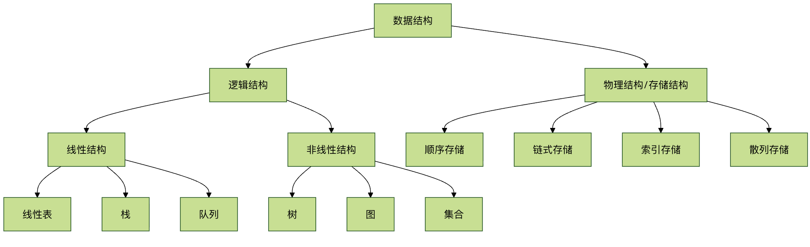
逻辑结构描述数据元素之间的抽象关系，与计算机如何实现无关。它主要分为：
物理结构（又称存储结构）描述数据在计算机内存中的实际存储方式。它主要分为：
算法是解决特定问题的一系列清晰、有限的指令步骤。
一个有效的算法应该具备以下五个特性：
我们如何判断一个算法的好坏？通常从时间和空间两个维度来衡量。
下表展示了不同时间复杂度随数据规模增长的趋势：
| 复杂度表示 | 名称 | 举例（n=10 vs n=1000） | 说明 |
|---|---|---|---|
| O(1) | 常数阶 | 1 步 vs 1 步 | 效率最高，与问题规模无关 |
| O(log n) | 对数阶 | ~3 步 vs ~10 步 | 效率非常高，如二分查找 |
| O(n) | 线性阶 | 10 步 vs 1000 步 | 效率良好，如遍历数组 |
| O(n log n) | 线性对数阶 | ~30 步 vs ~10000 步 | 效率较好，如快速排序 |
| O(n²) | 平方阶 | 100 步 vs 1,000,000 步 | 效率较低，如简单选择排序 |
| O(2ⁿ) | 指数阶 | 1024 步 vs 天文数字 | 效率极低，应尽量避免 |
简单理解： 我们追求的是随着数据量 n 变大，耗时增长越慢的算法。O(1) 和 O(log n) 是优秀的，O(n) 是可接受的，而 O(n²) 及以上在大数据量时就需要优化了。
让我们通过一个具体问题来感受数据结构和算法的应用。
问题： 在一个无序的数字列表中，快速找到是否存在某个目标数字。
这是一种直观但低效的方法。
输出结果：
目标数字 34 在数组中的索引是：4
这是一种高效的方法，但前提是数据必须有序。
输出结果：
有序数组：[11, 12, 23, 34, 45, 67, 89, 90] 目标数字 34 在有序数组中的索引是：3
对比与思考：
n=1000 时，线性查找最多需要 1000 次比较，而二分查找最多只需要约 10 次比较（因为 2^10 ≈ 1024）。学习数据结构与算法是一个循序渐进的过程，建议按以下路径进行：
在计算机科学的世界里，算法 就是计算机的菜谱，它是一个明确的、有限的、可执行的指令序列，用于解决一个特定的问题或完成一项具体的计算任务。无论是手机上的导航软件为你规划最短路径，还是搜索引擎在毫秒间从海量数据中找出最相关的网页，背后都依赖于精心设计的算法。
理解算法的基础和分析方法，是每一位程序员从代码实现者迈向问题解决者的关键一步。
本文将带你系统地认识算法的核心概念，并学习如何科学地评价一个算法的优劣。
一个合格的算法必须具备以下五个基本特征，我们可以用做菜的类比来理解它们：
我们可以用多种方式来描述一个算法，最常见的有三种：
用人类语言（如中文、英文）叙述算法的步骤。优点是易于理解，但缺点是不够精确，容易产生歧义。
示例：找出三个数中的最大值。
- 比较第一个数和第二个数，记住较大的那个。
- 将上一步记住的数与第三个数比较。
- 输出较大的数作为最大值。
使用图形化的符号表示算法的控制流程。它直观地展示了步骤之间的逻辑关系。
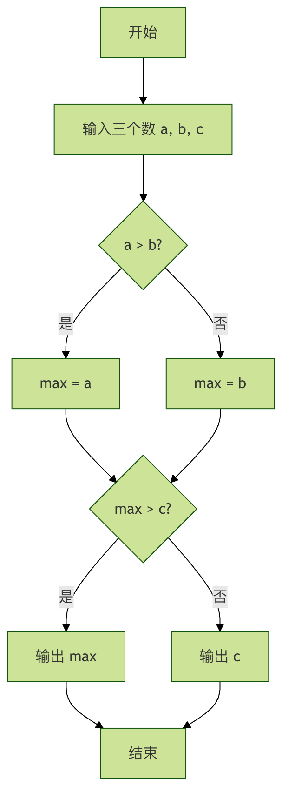
流程图说明：该图清晰地展示了求三数最大值算法的决策过程。菱形代表条件判断，矩形代表处理步骤，箭头指示了程序执行的方向。
一种介于自然语言和编程语言之间的描述方式。它使用类似编程语言的结构（如 if, for, while），但忽略具体的语法细节，专注于逻辑表达。
算法：FindMax 输入：三个数字 a, b, c 输出：最大值 max 1. if a > b then 2. max = a 3. else 4. max = b 5. end if 6. if c > max then 7. max = c 8. end if 9. 输出 max
最终，算法需要被翻译成某种编程语言（如 Python, Java, C++）的代码，才能在计算机上运行。
输出结果：
9 1
设计出能解决问题的算法只是第一步，我们还需要判断哪个算法更好。通常我们从两个维度来评估：
它衡量的是算法运行所需的时间如何随着输入数据规模（n） 的增长而增长。我们关注的不是具体的秒数，而是增长的趋势（称为 渐进时间复杂度）。
常见时间复杂度对比：
| 复杂度 | 名称 | 举例（n=数据量） | 形象比喻 |
|---|---|---|---|
| O(1) | 常数阶 | 数组按索引取值 | "开灯"。无论房间多大，按开关的时间都一样。 |
| O(log n) | 对数阶 | 二分查找 | "翻字典"。每次排除一半，查找速度极快。 |
| O(n) | 线性阶 | 遍历数组 | "数人数"。一个人一个人地数，时间与总人数成正比。 |
| O(n log n) | 线性对数阶 | 快速排序、归并排序 | "先分后治的排序"。比 O(n²) 快很多。 |
| O(n²) | 平方阶 | 简单选择排序、冒泡排序 | "两两握手"。每个人都要和其他所有人握手一次。 |
| O(2ⁿ) | 指数阶 | 求解汉诺塔、暴力穷举 | "细胞分裂"。增长非常恐怖，稍大的 n 就无法承受。 |
如何分析？ 关注循环和递归。
它衡量的是算法运行所需的内存空间如何随着输入数据规模（n） 的增长而增长。除了存储输入数据本身，还要考虑算法运行过程中额外申请的数组、变量等。
示例分析：
让我们以经典的 冒泡排序 为例，综合运用以上知识。
重复地遍历要排序的列表，一次比较两个相邻元素，如果它们的顺序错误就把它们交换过来。
遍历列表的工作重复进行，直到没有再需要交换的元素，这意味着列表已经排序完成。较小的元素会像气泡一样逐渐浮到数列的顶端。
输出结果：
排序前: [64, 34, 25, 12, 22, 11, 90] 排序后: [11, 12, 22, 25, 34, 64, 90] 排序是否正确? True
(n-1) + (n-2) + ... + 1 = n(n-1)/2 次比较和交换。swapped 标志优化后，只需遍历一次即可发现无交换，提前结束。i, j, swapped 等固定数量的临时变量，是 原地排序 算法。[5, 3, 8, 1] 进行排序，写出每一轮冒泡后的列表状态。[1,2,3,4,5]）和完全逆序的列表（如 [5,4,3,2,1]）测试，观察循环次数（可以在内层循环加计数器）。本章节，我们将介绍最基础、最常用的一类数据结构——线性数据结构。
线性数据结构就像是一排排队的人：
想象一下你正在排队买咖啡，或者整理书架上的书。
这些场景都有一个共同点：元素一个接一个地排列，形成一条线。
在计算机科学中，这种按顺序排列的数据集合，就是线性数据结构。
线性数据结构的特点是：除了第一个和最后一个元素外，每个元素都有且仅有一个 前驱 和一个 后继。
常见线性数据结构：
下图展示了线性数据结构的分类体系，每种结构都有其特定的应用场景和性能特点：
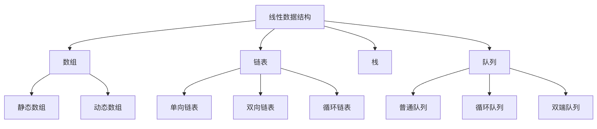
下图展示了栈的基本操作过程，栈遵循LIFO（后进先出）原则：
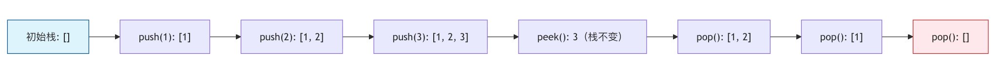
| 特性 | 描述 | 时间复杂度 |
|---|---|---|
| 访问元素 | 通过索引直接访问 | O(1) |
| 插入元素 | 需要移动后续元素 | O(n) |
| 删除元素 | 需要移动后续元素 | O(n) |
| 空间分配 | 固定大小，预先分配 | O(1) |
| 特性 | 描述 | 时间复杂度 |
|---|---|---|
| 访问元素 | 通过索引直接访问 | O(1) |
| 插入元素 | 可能需要扩容和复制 | 平均O(1)，最坏O(n) |
| 删除元素 | 需要移动后续元素 | O(n) |
| 空间分配 | 自动扩容 | O(n)（扩容时） |
| 操作 | 描述 | 时间复杂度 |
|---|---|---|
| 访问元素 | 需要从头遍历 | O(n) |
| 头部插入 | 直接插入 | O(1) |
| 尾部插入 | 需要遍历到尾部 | O(n) |
| 中间插入 | 需要先找到位置 | O(n) |
| 删除元素 | 需要先找到位置 | O(n) |
| 操作 | 描述 | 时间复杂度 |
|---|---|---|
| 访问元素 | 需要从头或尾遍历 | O(n) |
| 头部插入 | 直接插入 | O(1) |
| 尾部插入 | 直接插入（如果有尾指针） | O(1) |
| 中间插入 | 需要先找到位置 | O(n) |
| 删除元素 | 需要先找到位置 | O(n) |
| 操作 | 描述 | 时间复杂度 |
|---|---|---|
| push(入栈) | 在栈顶添加元素 | O(1) |
| pop(出栈) | 移除栈顶元素 | O(1) |
| peek(查看) | 查看栈顶元素 | O(1) |
| isEmpty(判空) | 检查栈是否为空 | O(1) |
| 操作 | 描述 | 时间复杂度 |
|---|---|---|
| enqueue(入队) | 在队尾添加元素 | O(1) |
| dequeue(出队) | 移除队头元素 | O(1) |
| front(查看队头) | 查看队头元素 | O(1) |
| isEmpty(判空) | 检查队列是否为空 | O(1) |
数组是最简单、最直接的线性数据结构。
我们可以把它想象成一栋 固定楼层数的公寓楼。
0 开始。你可以通过索引直接、快速地访问任何一个元素，时间复杂度为 O(1)。让我们用 Python 来演示数组（在 Python 中通常用 list 来模拟，但需注意 Python 的 list 是动态的）的核心操作。
输出：
寓楼住户情况： ['101室-张三', '102室-李四', '103室-王五', '104室-空置', '105室-空置'] 102室的住户是：102室-李四 赵六入住后： ['101室-张三', '102室-李四', '103室-王五', '104室-赵六', '105室-空置'] 加盖106室后： ['101室-张三', '102室-李四', '103室-王五', '104室-赵六', '105室-空置', '106室-孙七'] 103室-王五 已搬走。 王五搬走后： ['101室-张三', '102室-李四', '104室-赵六', '105室-空置', '106室-孙七']
| 优点 | 缺点 |
|---|---|
| 高速随机访问：通过索引可在常数时间内访问任何元素。 | 大小固定：静态数组一旦创建，容量难以改变。 |
| 内存效率高：连续存储，无需额外空间存储元素间关系。 | 插入/删除成本高：在中间插入或删除元素，需要移动大量后续元素以保持连续性。 |
当数组的固定大小和插入删除的低效成为问题时，链表就登场了。链表像一列 火车，每节车厢（节点）都装载着货物（数据），并通过挂钩（指针）连接下一节车厢。
链表的每个 节点 至少包含两部分：
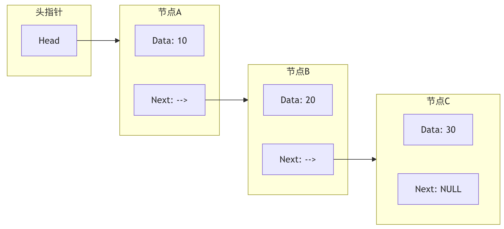
上图展示了一个 单向链表 的结构。头指针指向第一个节点，每个节点的 Next 指针指向下一个节点，最后一个节点的 Next 指向 NULL，表示链表结束。
链表主要类型：
我们来实现一个简单的单向链表。
输出：
=== 单向链表操作演示 === 初始列车： 车头 -> 车厢1-煤炭 -> 车厢2-木材 -> 车厢3-钢材 -> NULL 卸下木材后： 车头 -> 车厢1-煤炭 -> 车厢3-钢材 -> NULL
| 优点 | 缺点 |
|---|---|
| 动态大小：无需预先分配固定空间，可以灵活地增长和缩小。 | 内存开销：每个节点都需要额外空间存储指针。 |
| 高效插入/删除：在已知节点位置时，只需修改指针，无需移动大量元素。 | 顺序访问：无法像数组一样通过索引直接访问，必须从头开始遍历。 |
| 缓存不友好：节点在内存中分散存储，不利于CPU缓存预取。 |
栈是一种 后进先出 的数据结构，就像餐厅里叠放的盘子，你总是取走最上面的那个（最后放上去的）。
栈只允许在一端（称为 栈顶）进行插入（入栈）和删除（出栈）操作。另一端称为 栈底。
核心操作：
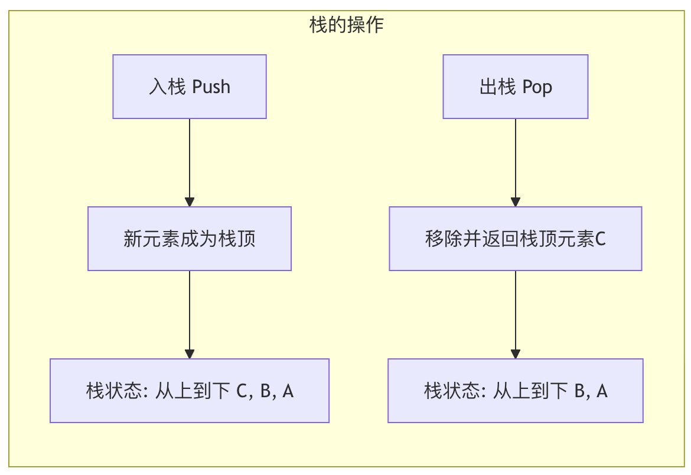
栈在计算机科学中应用极广，例如：函数调用栈、浏览器前进后退、表达式求值、括号匹配等。
输出：
=== 栈与括号匹配演示 ===
取出最上面的盘子: 盘子3
现在最上面的盘子是: 盘子2
表达式 '((1+2)*3)' 的括号是 平衡 的。
表达式 '({[ ]})' 的括号是 平衡 的。
表达式 '((())' 的括号是 不平衡 的。
表达式 ')( )' 的括号是 不平衡 的。
队列是一种 先进先出 的数据结构，就像生活中任何需要排队的地方（如超市收银台），先来的人先接受服务。
队列允许在一端（称为 队尾）进行插入（入队）操作，在另一端（称为 队头）进行删除（出队）操作。
核心操作：
队列常用于需要按顺序处理任务的场景，如：打印任务队列、消息队列、广度优先搜索等。
输出：
=== 队列与打印任务模拟 === 任务 'Alice的简历.pdf' 已加入打印队列。 任务 'Bob的报告.doc' 已加入打印队列。 任务 'Charlie的图表.png' 已加入打印队列。 开始打印... 正在打印: Alice的简历.pdf 正在打印: Bob的报告.doc 正在打印: Charlie的图表.png 所有打印任务已完成。
我们已经学习了四种基础的线性数据结构。下面这个表格帮助你快速回顾和对比它们的核心特性：
| 特性 | 数组 | 链表 | 栈 | 队列 |
|---|---|---|---|---|
| 存储方式 | 连续内存 | 分散内存，通过指针连接 | 基于数组或链表实现 | 基于数组或链表实现 |
| 访问方式 | 随机访问（通过索引） | 顺序访问（必须遍历） | 仅限栈顶（LIFO） | 仅限队头（FIFO） |
| 插入/删除效率 | 尾部快，中间/头部慢（需移动元素） | 已知位置时快（只需改指针） | 栈顶操作，O(1) | 队尾入队，队头出队，O(1) |
| 大小 | 固定（静态数组） | 动态 | 动态 | 动态 |
| 主要应用 | 快速查找、固定集合 | 频繁插入删除、不确定大小 | 函数调用、回溯、括号匹配 | 任务调度、缓冲、BFS |
哈希表（Hash Table），也叫散列表，是一种通过键（Key）直接访问值（Value）的高效数据结构。
它在平均情况下只需接近 O(1) 的时间复杂度，就能完成数据的插入、删除和查找。
相比之下，数组按值查找是 O(n)，平衡二叉搜索树是 O(log n)，数据量越大，哈希表的优势越明显。
| 操作 | 数组/链表 | 哈希表（平均） |
|---|---|---|
| 按值查找 | O(n) | O(1) |
| 插入（含定位） | O(n) | O(1) |
| 删除（含定位） | O(n) | O(1) |
| 空间利用率 | 高 | 中等 |
表中的
O(1)是平均情况。当哈希冲突非常严重时，单次操作最坏会退化到
O(n)，后文的"负载因子"一节会解释如何避免这种情况。
哈希表就像一个智能的储物柜系统。
传统储物柜没有索引，你必须记住每个物品放在哪个柜子里，找东西只能一个柜子一个柜子翻。
智能储物柜则不同：你把物品名称告诉管理员，他直接报出柜子编号，你走到对应位置就能取到物品。
生活中还有不少类似的场景：
| 生活场景 | 体现的哈希思想 |
|---|---|
| 字典查词 | 根据单词首字母快速定位到页码 |
| 电话簿 | 按姓氏拼音排序，快速找到联系人 |
| 图书馆索书号 | 根据分类号直接定位到书架位置 |
想象一座藏书上万的图书馆，你想找《哈利·波特》。
最笨的办法是从第一个书架的第一本开始，一本一本翻过去，可能要找上几个小时。
聪明的图书管理员会使用索引系统：按书名或作者的某种规则（比如首字母）先定位到大区域，再在小范围内查找。
这个索引系统的思想，正是哈希表的核心。
在学习实现之前，先弄清哈希表的组成和工作流程。
哈希表是一种通过键（Key）来直接访问值（Value）的数据结构。
它利用一个叫做哈希函数的转换规则，把任意大小的键（字符串、数字或对象）转换成一个固定范围内的数字，这个数字被称为哈希值。
哈希值再作为底层数组的索引，值就存储在索引对应的数组位置上。
这就像给每个键分配一个唯一的座位号：想找数据时，用同样的规则再算一次座位号，直接走过去就能拿到，而不用挨个座位去问。
一个哈希表主要由三个部分组成，以电话簿为例：
| 组成部分 | 作用 | 电话簿中的对应 |
|---|---|---|
| 键（Key） | 存储和查找数据时使用的标识符 | 人名 |
| 值（Value） | 与键相关联的实际数据 | 电话号码 |
| 哈希函数（Hash Function） | 把键映射为数组索引，是哈希表的心脏 | 按姓氏拼音排页的规则 |
假设我们要创建一个电话簿，将人名映射到电话号码。
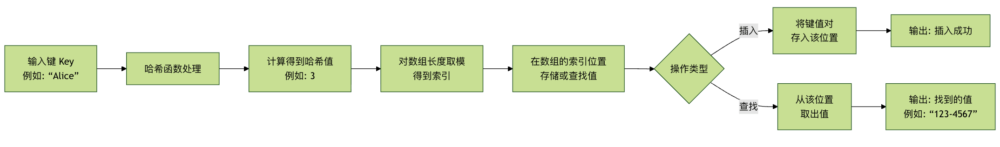
上图展示了哈希表的工作流程：无论是插入还是查找，都始于一个键。
键先经过哈希函数计算出索引，然后直接对数组的该位置进行操作，从而实现高速访问。
哈希函数是哈希表高效的关键，它的设计直接决定了冲突的频率。
评价一个哈希函数的好坏，主要看以下几个特性：
| 特性 | 描述 | 优先级 |
|---|---|---|
| 确定性 | 相同输入总是产生相同输出 | 必需 |
| 均匀分布 | 输出均匀分布在哈希表范围内 | 必需 |
| 高效计算 | 计算过程简单快速 | 重要 |
| 雪崩效应 | 输入微小变化导致输出巨大变化 | 建议 |
针对不同类型的键，有多种经典的哈希函数构造方法：
| 类型 | 示例 | 适用场景 |
|---|---|---|
| 除法取余法 | hash = key % table_size |
整数键 |
| 乘法取整法 | hash = floor(key * A % 1 * table_size) |
浮点数键 |
| 数字分析法 | 分析数字的分布规律 | 特定模式数据 |
| 平方取中法 | hash = (key * key) // 10^(n/2) % table_size |
数字键 |
| 字符串哈希 | 逐字符处理 | 字符串键 |
假设键是字符串，数组长度是 10。
一个简单的做法是：把字符串中每个字符的 ASCII 码相加，再对数组长度取余数。
输出结果：
简单哈希函数测试结果： 键 'runoob' -> 哈希索引: 1 键 'RUNOOB' -> 哈希索引: 9 键 'Alice' -> 哈希索引: 8 键 'David' -> 哈希索引: 8
可以看到，大小写不同的 runoob 和 RUNOOB 得到了完全不同的索引，体现了哈希函数的雪崩效应。
但 Alice 和 David 的索引都是 8，两个不同的键映射到了同一个位置。
这就是下一节要解决的问题——哈希冲突。
哈希冲突是指两个或更多不同的键，经过哈希函数计算后得到了相同的数组索引。
就像电影院把同一个座位号卖给了两位观众，显然需要一套规则来处理。
冲突不可避免：哈希值的范围（数组大小）是有限的，而可能的键是无限的。
解决冲突主要有两种经典方法。
这是最常用的方法。数组每个位置不再直接存数据，而是存放一个链表（Python 中用列表模拟），冲突的键值对依次挂在同一个链表上。
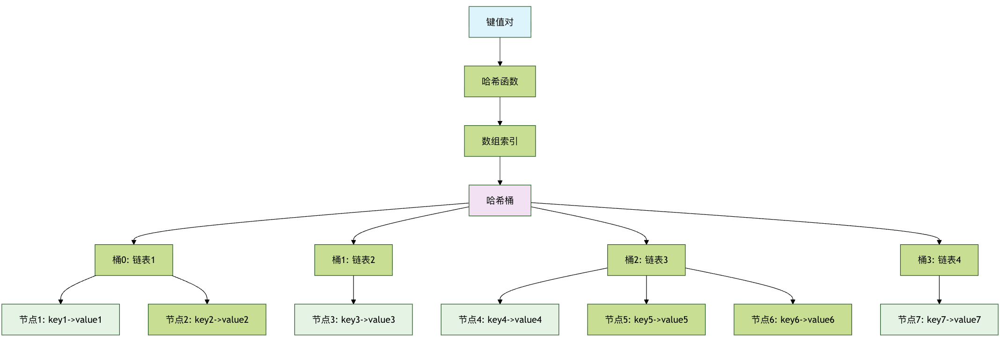
插入一条数据的完整流程是：
输出结果：
--- 链地址法哈希表示例 ---
插入数据后的哈希表：
索引 0: [('Bob', '987-6543')]
索引 1: [('Charlie', '555-1234')]
索引 2: []
索引 3: [('Alice', '123-4567'), ('David', '111-2222')]
索引 4: []
查找 'Bob' 的电话: 987-6543
查找不存在的 'Eve': None
删除 'Charlie' 后的哈希表：
索引 0: [('Bob', '987-6543')]
索引 1: []
索引 2: []
索引 3: [('Alice', '123-4567'), ('David', '111-2222')]
索引 4: []
注意看索引 3：由于表长只有 5，Alice 和 David 冲突，两个键值对被链接在同一个桶里。
查找时先算出索引 3，再在链表内逐个比对键，就能找到正确的值。
工程实践： 当链表过长时，Java 的
HashMap会把链表转换为红黑树，把最坏查找时间从O(k)降到O(log k)。
这种方法把所有元素都存储在数组本身中，不引入额外的链表。
发生冲突时，它按照某种探测序列（Probing Sequence）在数组中寻找下一个空闲位置。
| 类型 | 探测序列 | 优点 | 缺点 |
|---|---|---|---|
| 线性探测 | h, h+1, h+2, ... |
简单易实现，对缓存友好 | 容易聚集 |
| 二次探测 | h, h+1², h+2², ... |
减少聚集 | 可能无法探测所有位置 |
| 双重哈希 | h, h+hash2(key), h+2*hash2(key), ... |
分布均匀 | 计算复杂 |
这里我们实现最简单的线性探测：
输出结果：
--- 线性探测哈希表示例 --- 插入数据后的哈希表： 索引 0: 空 索引 1: 键=Apple, 值=10 索引 2: 空 索引 3: 键=Banana, 值=20 索引 4: 键=runoob, 值=30 索引 5: 键=Cherry, 值=40 索引 6: 空
runoob 的初始索引是 3，但该位置已被 Banana 占用。
线性探测向后移动一格，最终把它存到了索引 4，查找时沿着同样的路径就能找到它。
注意： 开放地址法的删除比较麻烦，不能简单把位置置回
None，否则会打断探测序列，导致后面的元素查不到。通常做法是放一个特殊的"已删除"标记（惰性删除），查找时跳过它，插入时可以复用。本例为简化未实现删除。
两种方法各有取舍，实际选型时可参考下表：
| 特性 | 链地址法 | 开放地址法 |
|---|---|---|
| 实现难度 | 相对简单 | 相对复杂，尤其是删除操作 |
| 空间开销 | 需要额外空间存储指针（链表） | 所有数据都在数组中，空间利用率可能更高 |
| 冲突影响 | 冲突只影响同一个桶（链表）的性能 | 冲突会挤占后续位置，可能导致"聚集"现象 |
| 扩容时机 | 当平均链表长度超过阈值时扩容 | 当负载因子（元素数/数组大小）超过阈值时扩容 |
| 适用场景 | 通用，更常见 | 对缓存友好，适用于已知最大数据量或内存紧张的场景 |
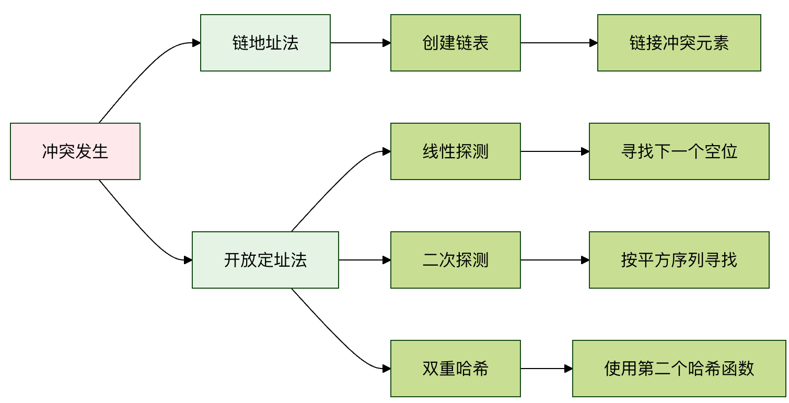
哈希表的效率高度依赖一个关键指标：负载因子（Load Factor）。
负载因子 = 哈希表中已存储的元素数量 ÷ 哈希表数组的总大小。
| 负载因子 | 含义 | 对性能的影响 |
|---|---|---|
| 低（如 0.5） | 数组还有大量空位 | 冲突概率小，操作速度快 |
| 高（如 0.9） | 数组接近满载 | 链表变长或探测距离变长，性能明显下降 |
为了保持高性能，当负载因子超过某个阈值（例如 0.75）时，哈希表会进行扩容：
这个过程称为 Rehashing。
虽然单次扩容比较耗时，但它能显著降低负载因子，让哈希表恢复高效。
由于扩容是均摊到多次插入操作中的，哈希表的插入平均复杂度依然是 O(1)。
让我们用自制的链地址法哈希表解决一个实际问题：统计一段文本中每个单词出现的次数。
测试文本如下：
the quick brown fox jumps over the lazy dog i learn python on runoob and runoob is free
输出结果：
=== 实践练习：单词计数器 === 处理的单词列表: ['the', 'quick', 'brown', 'fox', 'jumps', 'over', 'the', 'lazy', 'dog', 'i', 'learn', 'python', 'on', 'runoob', 'and', 'runoob', 'is', 'free'] 单词出现次数统计： 'learn': 1 次 'is': 1 次 'the': 2 次 'quick': 1 次 'on': 1 次 'runoob': 2 次 'brown': 1 次 'fox': 1 次 'over': 1 次 'dog': 1 次 'python': 1 次 'i': 1 次 'and': 1 次 'lazy': 1 次 'free': 1 次 'jumps': 1 次 验证：单词 'the' 出现了 2 次。 验证：单词 'runoob' 出现了 2 次。
你已经成功用自己实现的哈希表完成了一个实用任务。
在真实开发中，你几乎不需要手写哈希表，因为现代编程语言都提供了高度优化的内置实现，比如 Python 的 dict、Java 的 HashMap、C++ 的 unordered_map。
理解其原理，能帮助你更明智、更高效地使用它们。
最后用一张表梳理本文的核心知识点：
| 要点 | 说明 |
|---|---|
| 哈希表是什么 | 通过键直接访问值的高效数据结构，平均时间复杂度 O(1) |
| 核心机制 | 哈希函数把键转换为数组索引 |
| 关键挑战 | 哈希冲突：不同的键映射到同一索引，且不可避免 |
| 解决方案一 | 链地址法：每个索引位置挂一个链表，存储冲突的键值对 |
| 解决方案二 | 开放地址法：在数组内按探测序列寻找下一个空位 |
| 性能关键 | 负载因子过高时，通过扩容和重哈希恢复性能 |
| 实际应用 | 数据库索引、缓存系统、集合成员检查、对象属性存储等 |
树（Tree）是一种非线性的数据结构，它模拟了自然界中树的分支层次，与数组、链表这种一个接一个的线性结构不同，树中的数据元素（称为节点）之间存在明确的一对多的层次关系。
树形结构就像是一棵真实的树：
生活比喻：
| 结构类型 | 查找效率 | 插入效率 | 删除效率 | 有序性 |
|---|---|---|---|---|
| 数组 | O(n) | O(n) | O(n) | 无 |
| 链表 | O(n) | O(1) | O(1) | 无 |
| 哈希表 | O(1) | O(1) | O(1) | 无 |
| 二叉搜索树 | O(log n) | O(log n) | O(log n) | 有 |
在深入学习之前，让我们先熟悉一下树的基本术语：
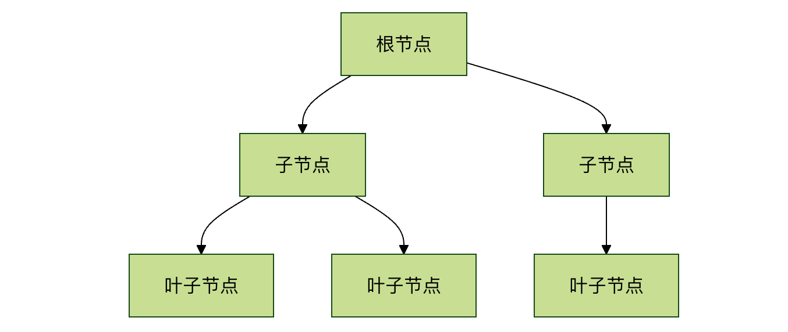
你可能会问，有了数组和链表，为什么还需要树？答案在于效率。
实际应用场景：
二叉树（Binary Tree）是每个节点最多有两个子节点的树，这两个子节点通常被称为左子节点和右子节点，它是许多强大树结构（如二叉搜索树、堆、AVL 树）的基础。
基本结构如下：
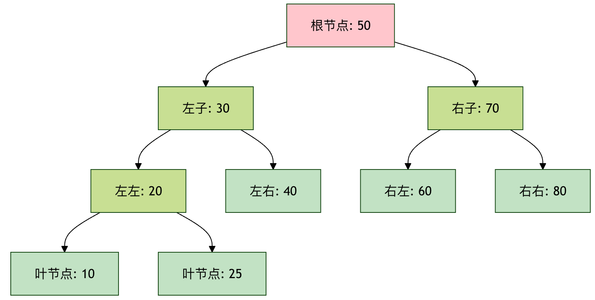
| 术语 | 定义 | 生活比喻 |
|---|---|---|
| 节点 | 包含数据和指针的基本单位 | 家族中的一个人 |
| 根节点 | 树的顶端节点 | 家族中的祖先 |
| 父节点 | 有子节点的节点 | 父母 |
| 子节点 | 被父节点指向的节点 | 子女 |
| 兄弟节点 | 同一父节点的子节点 | 兄弟姐妹 |
| 叶节点 | 没有子节点的节点 | 家族中没有子女的人 |
| 深度 | 从根到该节点的边数 | 世代数 |
| 高度 | 从该节点到最远叶节点的边数 | 该家族延续的代数 |
| 类型 | 特点 | 时间复杂度 | 应用场景 |
|---|---|---|---|
| 普通二叉树 | 每个节点最多2个子节点 | O(n) | 表达式树 |
| 满二叉树 | 每个节点都有0或2个子节点 | O(n) | 霍夫曼编码 |
| 完全二叉树 | 除最后一层外都是满的 | O(n) | 堆实现 |
| 二叉搜索树 | 左<根<右 | 平均O(log n) | 搜索、排序 |
| 平衡二叉树 | 左右子树高度差≤1 | O(log n) | 数据库索引 |
| 红黑树 | 带颜色的平衡树 | O(log n) | Linux内核 |
| 操作 | 描述 | 时间复杂度 |
|---|---|---|
| 查找 | 根据值查找节点 | 平均O(log n)，最坏O(n) |
| 插入 | 插入新节点 | 平均O(log n)，最坏O(n) |
| 删除 | 删除指定节点 | 平均O(log n)，最坏O(n) |
| 遍历 | 访问所有节点 | O(n) |
遍历是指按照某种规则访问树中的每一个节点，且每个节点只访问一次。这是树相关算法的基础。主要有四种方式：
前序遍历（Pre-order）：根 -> 左 -> 右
中序遍历（In-order）：左 -> 根 -> 右
后序遍历（Post-order）：左 -> 右 -> 根
层序遍历（Level-order）：按层，从左到右
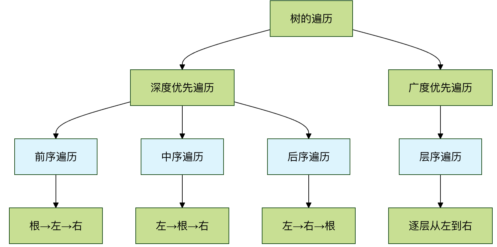
示例：对于下图二叉树，遍历结果如下：
1
/ \
2 3
/ \ \
4 5 6
理论说够了，让我们动手写代码！我们将实现一个简单的二叉树节点类，并完成插入和遍历操作。
每个节点需要存储数据，并指向其左、右子节点。
让我们手动构建前面示例图中的那棵树。
递归是实现树遍历最直观的方式。
层序遍历需要借助队列的"先进先出"特性。
恭喜你完成了基础学习！要真正掌握树，动手练习必不可少。
编写一个函数 tree_height(node)，接收一个树的根节点，返回这棵树的高度（空树高度为 -1 或 0，约定俗成即可，本例我们定义为边数）。
提示：树的高度 = 1 + max(左子树高度， 右子树高度)。这是一个典型的递归问题。
编写一个函数 search_in_tree(node, target_value)，在给定的二叉树中搜索是否存在值等于 target_value 的节点。如果找到，返回 True，否则返回 False。
提示：可以使用任何一种遍历方法，访问每个节点时比较其值。
这是二叉树的一个经典变种。在二叉搜索树中，对于任意节点：
你的挑战是：
insert_into_bst(root, value) 函数，将一个值插入到二叉搜索树的正确位置。search_in_bst(root, value) 函数，利用 BST 的特性进行高效查找（平均时间复杂度 O(log N)）。在计算机科学中，图被广泛用于模拟社交网络（用户是点，好友关系是线）、网页链接（网页是点，超链接是线）、通信网络乃至路径规划等问题。
图就像是一张社交网络关系图：
想象一下你所在城市的交通网络：各个地点（如家、学校、商场）是点，连接这些地点的道路是线。图（Graph）就是这种点和线关系的数学抽象，它是用于表示实体间复杂关系的一种数据结构。
现实生活中的案例：
| 场景 | 其他结构 | 图结构 |
|---|---|---|
| 社交关系 | 难以表达复杂关系 | 自然表达多对多关系 |
| 路径规划 | 需要复杂的数据结构 | 直观表示网络和路径 |
| 依赖关系 | 难以表示循环依赖 | 轻松处理复杂依赖 |
| 网络分析 | 无法表达网络拓扑 | 完美描述网络结构 |
| 术语 | 定义 | 生活比喻 | 符号表示 |
|---|---|---|---|
| 顶点（Vertex） | 图中的基本单元 | 社交网络中的人 | V, u, v |
| 边（Edge） | 连接两个顶点的线 | 两人之间的关系 | E, (u,v) |
| 度（Degree） | 顶点连接的边数 | 一个人的好友数量 | deg(v) |
| 路径（Path） | 顶点的序列 | 从A到B的路线 | v₁→v₂→…→vₙ |
| 环（Cycle） | 起点和终点相同的路径 | 从家出发最终回家 | v₁→v₂→…→v₁ |
| 连通图 | 任意两点间都有路径 | 所有人都能互相联系 | |
| 权重（Weight） | 边的数值属性 | 两城市间的距离 | w(u,v) |
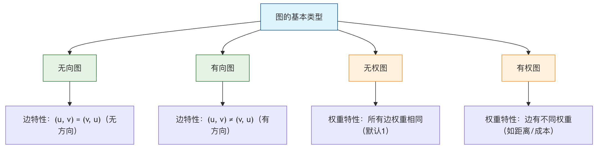
| 分类标准 | 类型 | 特点 | 应用场景 |
|---|---|---|---|
| 方向性 | 无向图 | 边没有方向 | 好友关系、道路网络 |
| 有向图 | 边有方向 | 关注关系、工作流程 | |
| 权重 | 无权图 | 所有边权重相同 | 社交网络关系 |
| 有权图 | 边有不同权重 | 地图距离、网络流量 | |
| 连通性 | 连通图 | 任意两点可达 | 交通网络 |
| 非连通图 | 存在孤立点 | 社交群体 | |
| 环 | 无环图 | 没有环路 | 任务依赖、家族树 |
| 有环图 | 包含环路 | 道路网络 |
| 特性 | 描述 | 时间复杂度 | 空间复杂度 |
|---|---|---|---|
| 存储方式 | 二维矩阵 | ||
| 检查边存在 | matrix[i][j] != 0 |
O(1) | |
| 添加边 | matrix[i][j] = weight |
O(1) | |
| 删除边 | matrix[i][j] = 0 |
O(1) | |
| 遍历邻接点 | 扫描一行/列 | O(V) | |
| 空间占用 | V×V矩阵 | O(V²) |
| 特性 | 描述 | 时间复杂度 | 空间复杂度 |
|---|---|---|---|
| 存储方式 | 数组+链表 | ||
| 检查边存在 | 在链表中查找 | O(deg(v)) | |
| 添加边 | 在链表中添加 | O(1) | |
| 删除边 | 在链表中删除 | O(deg(v)) | |
| 遍历邻接点 | 遍历链表 | O(deg(v)) | |
| 空间占用 | 顶点数组+边链表 | O(V+E) |
一个图 G 由两个集合构成：
(u, v) 表示。输出：
顶点（用户）: ['Alice', 'Bob', 'Charlie', 'Diana'] Alice 的好友（边）: ['Bob', 'Charlie']
图可以根据其边的特性分为多种类型，理解这些是掌握图论的基础。
| 类型 | 边（Edge）的特点 | 生活类比 | 示例 |
|---|---|---|---|
| 无向图 | 边没有方向，(A, B) 表示 A 和 B 互相连接。 |
双向友谊：如果 Alice 是 Bob 的朋友，那么 Bob 也一定是 Alice 的朋友。 | 社交网络中的好友关系、电路中的连接。 |
| 有向图 | 边有方向，A -> B 表示从 A 指向 B 的单向连接。 |
微博关注：你可以关注某人，但对方不一定关注你。 | 网页超链接、任务依赖关系、交通单行道。 |
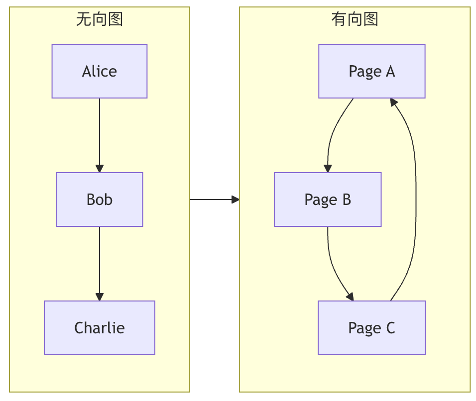
在权重图中，每条边都被赋予一个数值（权重），可以表示距离、成本、时间或关系强度。
A -> B -> C。如何在计算机中表示一个图？主要有两种主流方法。
使用一个二维数组（矩阵）matrix 来表示图。matrix[i][j] 的值表示顶点 i 到顶点 j 的边的情况。
0 或 ∞ 表示无边）。O(1)）。O(V^2)），对于边数较少的"稀疏图"浪费空间。为每个顶点维护一个列表（链表、数组等），记录与其直接相连的所有顶点（及权重）。
O(V + E)），特别适合稀疏图。能快速找到一个顶点的所有邻居。O(degree(V))）。遍历是图算法的基础，意味着系统地访问图中的每一个顶点。
主要有两种策略：
广度优先搜索（BFS）像"水波扩散"一样，从起点开始，先访问所有直接邻居，再访问邻居的邻居，依此类推。它使用队列来实现。
算法步骤：
v。
b. 访问 v 的所有未访问邻居，将它们放入队列并标记为已访问。深度优先搜索（DFS）像"走迷宫"一样，选择一条路走到尽头，然后回溯，再走另一条路。它使用栈（或递归）来实现。
递归算法步骤：
v 开始，标记为已访问。v 的每一个未访问邻居 u：
a. 递归调用 DFS(u)。图遍历算法对比:
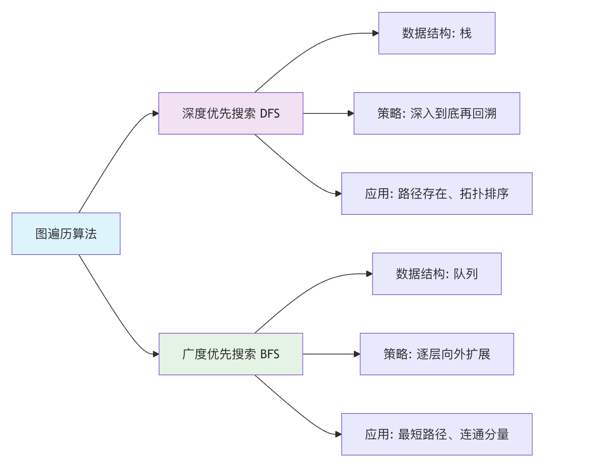
掌握了图的表示和遍历，你就可以探索许多经典问题了：
最短路径问题：在地图导航中，找到两点间的最短行驶距离。
最小生成树：在保证所有顶点连通的前提下，选择总权重最小的边集（例如，为多个村庄铺设成本最低的光纤网络）。
拓扑排序：对有向无环图（DAG）的顶点进行线性排序，使得对于任何有向边 u->v，u 在排序中都排在 v 之前（例如，安排课程的学习顺序）。
分治法（英语：Divide and conquer）是建基于多项分支递归的一种很重要的算法范型，字面上的解释是"分而治之"，就是把一个复杂的问题分成两个或更多的相同或相似的子问题，直到最后子问题可以简单的直接求解，原问题的解即子问题的解的合并。
简单来说，分治就是三个步骤：分解 -> 解决 -> 合并。
想象一下，你面前有一大堆积木需要按颜色分类。如果直接动手，可能会眼花缭乱。一个更聪明的办法是：先把这堆积木分成两小堆，然后分别对这两小堆进行分类，最后把分好类的两小堆合并起来。这个 "分而治之" 的过程，就是分治算法的核心思想。
分治算法就像是一个聪明的团队领导解决大问题的方法：
现实案例：
| 问题特征 | 其他方法 | 分治方法 |
|---|---|---|
| 大规模数据 | 可能效率低下 | 分解后并行处理 |
| 复杂结构 | 难以直接解决 | 简化子问题 |
| 可递归定义 | 需要复杂逻辑 | 天然适合递归 |
| 独立子问题 | 难以并行化 | 完美支持并行 |
分治算法通常遵循一个清晰的三步框架，我们可以用下面的流程图来直观理解：
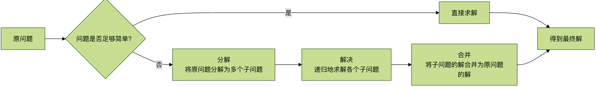
上图说明：算法首先判断当前问题是否简单到可以直接求解。如果是，则直接求解并返回结果；如果不是，则将其分解为若干子问题，递归求解每个子问题，最后将子问题的结果合并，得到最终答案。
具体来说，这三个步骤是：
为了让你更好地理解分治算法是如何工作的，我们来看两个最经典的例子。
归并排序是分治思想的完美体现，其目标是将一个无序数组排序成有序数组。
算法步骤：
代码示例：
二分查找用于在一个已排序的数组中快速定位目标值。它不断将搜索范围对半分解，是分治策略的简化版（通常只处理一个子问题，无需合并）。
算法步骤：
代码示例：
| 特点 | 说明 |
|---|---|
| 问题可分解 | 原问题必须能够被分解为规模更小的相似子问题。 |
| 子问题独立 | 子问题之间最好相互独立，这样求解和合并会更简单。 |
| 有终止条件 | 必须存在一个简单的基线条件，当问题规模足够小时可以直接求解。 |
| 解可合并 | 必须能有效地将子问题的解合并为原问题的解。 |
分治算法的时间复杂度通常可以用 主定理 来分析，其递归关系一般形式为： $$ T(n) = aT(\frac{n}{b}) + f(n) $$ 其中：
n 是问题规模。a 是分解出的子问题个数。n/b 是每个子问题的规模。f(n) 是分解和合并步骤所花费的时间。例如，对于归并排序：
a = 2（分成两个子数组）b = 2（每个子数组规模减半）f(n) = O(n)（合并两个有序数组需要线性时间）现在，是时候动手巩固你对分治算法的理解了。请尝试完成以下练习：
练习 1：实现快速排序 快速排序是另一个经典的分治算法。它的思路是：
你的任务：根据以上描述，尝试编写快速排序的 Python 代码。
练习 2：寻找数组中的最大子数组和
问题：给定一个整数数组（可能包含负数），找到一个具有最大和的连续子数组。
例如，对于 [-2, 1, -3, 4, -1, 2, 1, -5, 4]，最大子数组是 [4, -1, 2, 1]，其和为 6。
提示（分治思路）：
尝试用分治策略解决这个问题。
贪心算法（英语：greedy algorithm），又称贪婪算法，是一种在每一步选择中都采取在当前状态下最好或最优（即最有利）的选择，从而希望导致结果是全局最好或最优的算法策略。
贪心算法 就像我们常说的只顾眼前利益，并不从整体最优上加以考虑，所做的选择只是在某种意义上的局部最优解。
想象一下，你面前有一堆不同面额的硬币（比如 1 元、5 角、1 角），你需要用最少数量的硬币凑出 1.8 元。
一个很自然的想法是：每次都先拿面额最大的硬币。
先拿 1 元，剩下 0.8 元；再拿 5 角，剩下 0.3 元；最后拿三个 1 角。
整个过程，我们在每一步都做出了 当前看来最好的选择，这就是贪心算法的核心思想。
贪心算法就像是一个目光短浅但决策果断的人：
现实中的案例：
| 特点 | 描述 | 优点 | 缺点 |
|---|---|---|---|
| 局部最优 | 每步选择当前最优解 | 简单直观 | 可能不是全局最优 |
| 不可撤销 | 选择后不能反悔 | 决策快速 | 容易陷入局部最优 |
| 高效性 | 通常时间复杂度低 | 实用性强 | 适用范围有限 |
| 简单实现 | 逻辑清晰易懂 | 易于编码 | 需要证明正确性 |
这是一个初学者容易混淆的点。我们用表格来对比一下：
| 特性 | 贪心算法 | 动态规划 |
|---|---|---|
| 决策依据 | 每一步都做出当前最优选择，不可回退。 | 每一步的选择依赖于子问题的解，会保存中间结果，可比较多种选择。 |
| 最优解保证 | 不一定能得到全局最优解，需要问题本身具有贪心选择性质。 | 通常能得到全局最优解。 |
| 效率 | 高效，通常时间复杂度较低。 | 相对较低，因为需要解决重叠子问题。 |
| 适用场景 | 问题具有贪心选择性质和最优子结构，如 Huffman 编码、最小生成树。 | 问题具有最优子结构和重叠子问题，如背包问题、最短路径。 |
简单来说，动态规划是"谋定而后动"，会为了长远利益牺牲眼前；而贪心算法是"今朝有酒今朝醉"，只追求眼前利益。
贪心算法没有固定的代码模板，但其思想可以归结为以下步骤：
一个通用的伪代码框架如下：
让我们通过几个经典问题，来具体感受贪心算法的应用。每个问题我们都将：1）分析问题与贪心策略；2）提供完整代码；3）进行逐行解析。
问题描述：假设硬币体系为 [100, 50, 20, 10, 5, 1]（单位：分），需要找零 amount 分，求使用硬币的最少数量。
贪心策略：每次选择面值不超过剩余金额的最大硬币。对于人民币体系，这个策略是有效的。
代码实现：
代码解析：
coins.sort(reverse=True) 是贪心策略的关键准备，确保我们总是先考虑大面额硬币。while 循环确保只要还能用当前面值的硬币，就继续使用，这实现了"尽可能多"的贪心选择。重要提醒：贪心算法解决找零问题 并不总是得到最优解！例如，如果硬币体系是 [25, 20, 10, 5, 1]，要凑出 40 分。贪心法会选择 25+10+5（三枚），但最优解是 20+20（两枚）。只有特定货币体系（如人民币）下贪心策略才有效。
问题描述：给你很多个会议（每个会议有开始和结束时间），如何安排才能使你在一个会议室里能举行的会议数量最多？
贪心策略：每次选择结束时间最早的会议。这样可以为后面留下更多的时间。
代码实现：
代码解析：
sorted(intervals, key=lambda x: x[1]) 是实现贪心策略的核心，按结束时间排序。if start >= last_end_time 是可行性检查，确保当前会议不与已选会议重叠。霍夫曼编码是一种用于无损数据压缩的贪心算法。其核心思想是：给出现频率高的字符分配较短的编码，出现频率低的字符分配较长的编码。
贪心策略：反复将频率最小的两个节点合并，构建一棵二叉树。
由于完整实现较长，这里展示其核心的贪心合并过程：
算法可视化： 以下图展示了用上述测试数据构建霍夫曼树的前几步合并过程：
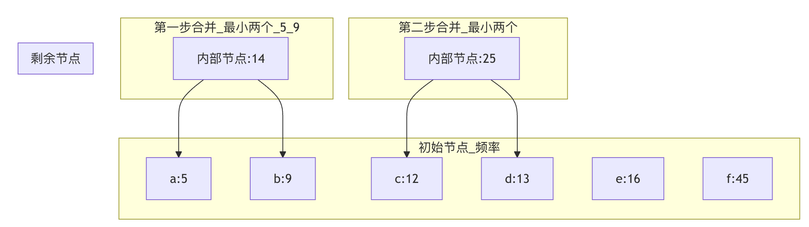
图解说明：算法始终从所有可用节点（初始为叶子节点，后续包括内部节点）中选出频率最小的两个进行合并，生成一个新的内部节点。此过程重复，直至形成一棵完整的二叉树。这棵树的叶子节点对应原始字符，从根到叶子的路径（左分支为 0，右分支为 1）即为该字符的霍夫曼编码。
如何判断一个问题能否用贪心算法解决？通常需要证明以下两点：
以 区间调度问题 为例的证明思路：
i。存在一个最优解包含区间 i。i。设该最优解中第一个区间是 j。因为 i 结束最早，所以用 i 替换 j，不会与其他区间冲突，且解的大小不变，因此包含 i 的解也是最优解。i 后，剩下的问题是在所有与 i 不重叠的区间中寻找最优解。这构成了一个原问题的子问题。现在，尝试用贪心算法解决以下问题，以巩固你的理解。
问题：给定一个非负整数数组 nums，你最初位于数组的第一个下标。数组中的每个元素代表你在该位置可以跳跃的最大长度。判断你是否能够到达最后一个下标。
示例：nums = [2,3,1,1,4]，返回 True（从下标 0 跳 1 步到下标 1，再跳 3 步到最后一个下标）。
贪心策略提示：不是模拟每一步跳多远，而是维护一个 最远可到达位置。
问题：有一群孩子和一堆饼干，每个孩子有一个胃口值 g[i]，每块饼干有一个尺寸 s[j]。只有饼干尺寸 >= 孩子胃口时，孩子才能满足。求最多能满足多少个孩子。
示例：g = [1,2,3], s = [1,1]，输出 1。
贪心策略提示：为了满足更多孩子，应该用最小的饼干去满足胃口最小的孩子（或者反过来思考）。
问题：给定一个数组 prices，其中 prices[i] 是一支给定股票第 i 天的价格。你可以无限次地完成交易（即买卖一支股票），但你不能同时参与多笔交易（必须在再次购买前出售掉之前的股票）。计算你能获得的最大利润。
示例：prices = [7,1,5,3,6,4]，输出 7（在 1 买 5 卖，利润 4；在 3 买 6 卖，利润 3；总利润 7）。
贪心策略提示：利润可以分解为每天的差价。只要 今天的价格比昨天高，就把这部分差价算作利润。
动态规划（英语：Dynamic programming，简称 DP）是一种在数学、管理科学、计算机科学、经济学和生物信息学中使用的，通过把原问题分解为相对简单的子问题的方式求解复杂问题的方法。
想象一下，你正在爬一个
n级的楼梯。每次你可以爬1级或2级台阶。那么，爬到楼顶总共有多少种不同的方法呢？
如果你从最顶层的目标（第
n级）开始想，可能会觉得复杂。但如果我们换个思路：要到达第
n级台阶，你只能从第n-1级跨一步上来，或者从第n-2级跨两步上来。所以，到达第n级的方法数，就等于到达第n-1级的方法数加上到达第n-2级的方法数。
这种将一个大问题分解为若干个重叠的子问题，并通过保存子问题的解来避免重复计算，从而高效解决原问题的方法，就是动态规划（Dynamic Programming，简称 DP）。
动态规划的核心是 记住求过的解 。
动态规划通常用于解决具有以下性质的问题：
我们可以用一个简单的流程图来理解动态规划的解题思路：
上图展示了解决一个动态规划问题的典型步骤：从定义问题开始，通过分析找到子问题结构，然后用状态和状态转移方程将其形式化，最后通过明确的初始条件和计算顺序得到答案。
让我们用经典的 "爬楼梯" 问题来感受从递归到动态规划的优化过程。
假设你正在爬楼梯。需要 n 阶你才能到达楼顶。每次你可以爬 1 或 2 个台阶。你有多少种不同的方法可以爬到楼顶？
根据开头的分析，我们可以直接写出递归公式：
f(n) = f(n-1) + f(n-2)
其中， f(1) = 1, f(2) = 2。
缺点分析：这种递归存在大量的重复计算。例如，计算 f(5) 需要 f(4) 和 f(3)，计算 f(4) 又需要 f(3) 和 f(2)，这里的 f(3) 就被计算了两次。当 n 很大时，时间复杂度是指数级的 O(2^n)，效率极低。
我们可以用一个数组（"备忘录"）来存储已经计算过的结果，避免重复计算。
这种方法的时间复杂度降到了 O(n)，因为每个子问题只计算一次。空间复杂度为 O(n)。这已经是一种动态规划思想，称为 "自顶向下" 或 "记忆化搜索"。
我们直接从最小的子问题开始，一步步递推到原问题。通常用一个数组 dp 来存储状态。
观察状态转移方程 dp[i] = dp[i-1] + dp[i-2]，我们发现当前状态只依赖于前两个状态。因此，我们不需要保存整个 dp 数组，只用两个变量滚动更新即可。
优化后，空间复杂度从 O(n) 降到了 O(1)。
通过爬楼梯问题，我们可以总结出解决动态规划问题的通用四步曲：
用一个或多个数组（通常叫 dp）来表示子问题的解。关键是弄清楚 dp[i] 或者 dp[i][j] 代表什么含义。
在爬楼梯问题中，我们定义
dp[i]为"爬到第i级台阶的方法总数"。
找出 dp[i] 与之前状态（如 dp[i-1], dp[i-2]）之间的关系。这是动态规划的核心和难点。
在爬楼梯问题中，状态转移方程为：
dp[i] = dp[i-1] + dp[i-2]。
最小的、不可再分的子问题的解。这是递推的起点，必须手动定义。
在爬楼梯问题中，初始条件为：
dp[1] = 1,dp[2] = 2。
确定是"自顶向下"（记忆化递归）还是"自底向上"（循环递推），并确保在计算 dp[i] 时，它所依赖的子问题都已经被计算过了。
在爬楼梯问题中，我们采用自底向上，从
i=3循环到i=n。
斐波那契数列是动态规划最直接的例子，其定义本身就是状态转移方程。
问题：求斐波那契数列的第 n 项。 F(0)=0, F(1)=1, F(n)=F(n-1)+F(n-2) (n>=2)
这是一个更典型的、展示最优子结构的问题。
问题描述：给你一个整数数组 coins，表示不同面额的硬币，以及一个整数 amount，表示总金额。计算并返回可以凑成总金额所需的最少的硬币个数。如果没有任何一种硬币组合能组成总金额，返回 -1。你可以认为每种硬币的数量是无限的。
dp[i] 表示凑成总金额 i 所需的最少硬币个数。i，我们可以遍历每一种面额的硬币 coin。如果 coin <= i，那么凑成金额 i 的一种可能方式是：先凑成金额 i - coin，然后再加上一枚 coin 面额的硬币。我们要找的是所有可能中的最小值。
因此，方程可以写为：
dp[i] = min(dp[i], dp[i - coin] + 1)，对于所有满足 coin <= i 的 coin。dp[0] = 0，凑成金额 0 需要 0 枚硬币。其他 dp[i] 初始化为一个很大的数（如 amount + 1 或 float('inf')），代表暂时无法凑成。i=1 计算到 i=amount。请尝试独立解决以下问题，以巩固对动态规划的理解：
给你一个整数数组 nums，请你找出一个具有最大和的连续子数组，并返回其最大和。
示例：
输入：nums = [-2,1,-3,4,-1,2,1,-5,4] 输出：6 解释：连续子数组 [4,-1,2,1] 的和最大，为 6。
提示：
dp[i] 为"以第 i 个元素结尾的连续子数组的最大和"。dp[i] = max(nums[i], dp[i-1] + nums[i])。dp[i] 中的最大值。给你一个整数数组 nums，找到其中最长严格递增子序列的长度。
示例：
输入：nums = [10,9,2,5,3,7,101,18] 输出：4 解释：最长递增子序列是 [2,3,7,101]，因此长度为 4。
提示：
dp[i] 为"以第 i 个数字结尾的最长递增子序列的长度"。i，需要遍历 j 从 0 到 i-1，如果 nums[i] > nums[j]，则 dp[i] = max(dp[i], dp[j] + 1)。dp[i] 至少为 1（只包含自身）。在掌握了二叉树、二叉搜索树等基础树结构后，我们即将踏入一个更广阔、更高效的领域——高级树结构。
如果说基础树是数据结构世界中的普通公路，那么高级树结构就是精心设计的高速公路"和立交桥，它们通过巧妙的平衡规则和存储策略，确保了在数据量巨大或操作频繁时，依然能保持卓越的性能。
本章节将介绍 AVL树、红黑树、B树 和 B+树 这四种经典高级树结构。
在深入学习之前，我们先问一个问题：有了高效的二叉搜索树（BST），为什么还需要更复杂的树？
想象一下，你有一家图书馆，使用 BST 来按书名排序存放书籍。如果你按字母顺序一本一本插入（例如：A..., B..., C...），这棵树会退化成一条链（类似于链表）。这时，查找一本书的时间会从理想的 O(log n) 恶化到最差的 O(n)，效率极低。
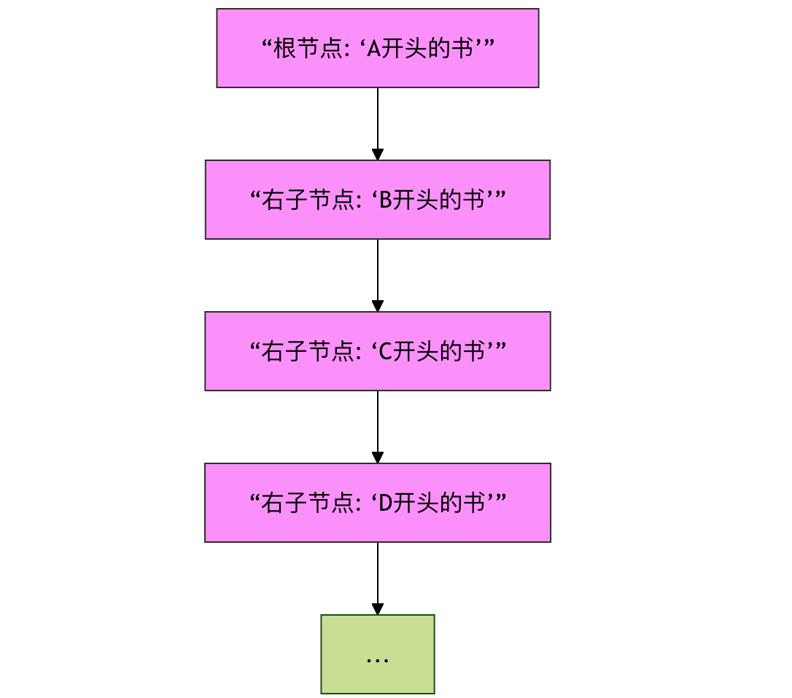
图：二叉搜索树在插入有序数据时退化成链表的示意图，导致查找性能下降。
高级树结构（自平衡树）就是为了解决这个问题而生的。它们会在插入或删除节点时，自动调整树的形态，保持树的平衡，从而确保查找、插入、删除等操作的时间复杂度始终维持在 O(log n) 级别。
AVL 树是最早被发明的自平衡二叉搜索树，以其发明者 Adelson-Velsky 和 Landis 的名字命名。
AVL 树的核心思想非常简单：对于树中的任意一个节点，其左子树和右子树的高度差不能超过 1。
每个节点都有一个 平衡因子，其计算公式为：
平衡因子 = 左子树高度 - 右子树高度
在 AVL 树中，每个节点的平衡因子只能是 -1、0 或 1。
当插入或删除一个节点后，某个节点的平衡因子变为 2 或 -2，树就失衡了。为了恢复平衡，AVL 树通过四种旋转操作来调整：
| 特点 | 说明 |
|---|---|
| 严格平衡 | 平衡条件严格（高度差≤1），树的高度最接近 log n，查找性能极佳。 |
| 调整频繁 | 插入/删除后可能需要从底向上多次旋转来恢复平衡。 |
| 适用场景 | 适合查询多，增删少的场景，例如数据库索引的中间层或内存中的查找表。 |
红黑树是另一种自平衡二叉搜索树，它在AVL树的基础上做了一些"妥协"。它不像AVL树那样追求绝对平衡，而是通过一套更宽松的规则来保证大致平衡，从而减少在插入/删除时的旋转次数，在整体性能上取得了更好的工程实践效果。Java的 TreeMap、TreeSet 和 C++ STL 的 map、set 底层都使用了红黑树。
红黑树通过为节点增加颜色属性（红色或黑色）并遵守以下规则来维持平衡：
规则 4 和 5 是红黑树平衡的关键。规则 5 保证了没有一条路径会比其他路径长出两倍以上，从而实现了大致平衡。
插入新节点时，我们总是先将其着为红色（以避免违反规则 5）。如果这导致了冲突（主要是违反规则 2 或规则 4），则需要通过变色和旋转来调整。调整的核心思路是将冲突（红色）不断向树根方向"上移"，直到能够通过变色或旋转解决。
| 特性 | AVL树 | 红黑树 |
|---|---|---|
| 平衡标准 | 严格（高度差≤1） | 宽松（通过颜色规则保证大致平衡） |
| 查找性能 | 更优（树更平衡） | 稍逊，但仍是 O(log n) |
| 插入/删除 | 可能需要更多旋转 | 旋转次数较少，效率更高 |
| 适用场景 | 需要频繁查找的场景 | 综合性能要求高的场景，如语言标准库、文件系统 |
当数据量太大，无法全部装入内存时，就必须存放在磁盘上。磁盘I/O（读写）速度远慢于内存访问。B树和B+树就是为了减少磁盘I/O次数而设计的多路平衡搜索树，它们被广泛用于数据库和文件系统的索引。
B树不再是一个节点只存一个数据和两个指针。一个 m阶B树 的节点具有以下特性：
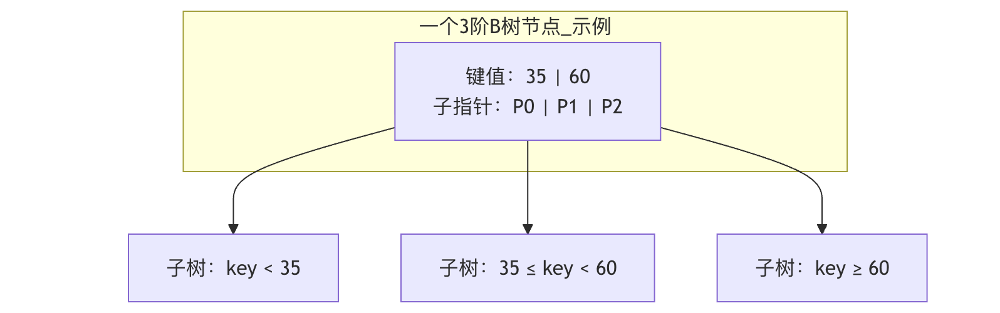
图：一个 3 阶 B 树节点的结构示意图。它包含两个键和三个指针，将数据范围划分为三个区间。
B树的优势在于矮胖的树形。由于一个节点可以存储多个键和拥有多个子节点，树的高度大大降低。查找一个数据时，需要加载的磁盘页面（节点）数就变少了，从而提升了效率。
B+ 树在 B 树的基础上做了关键改进，是现代数据库索引的事实标准。
B+树与B树的核心区别：
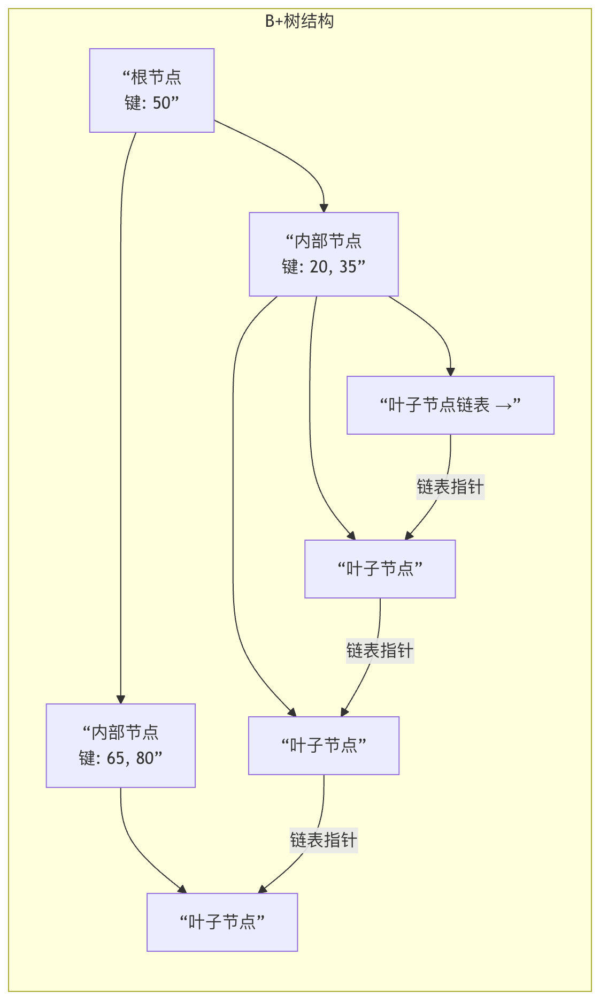
图：B+ 树示意图。注意数据仅在叶子节点，且叶子节点形成有序链表。
| 优势 | 解释 |
|---|---|
| 更稳定的查询效率 | 任何查找都必须走到叶子节点，路径长度相同，性能稳定。 |
| 更高的空间利用率 | 内部节点不存数据，能容纳更多键，树更矮，I/O更少。 |
| 强大的范围查询 | 通过叶子节点的链表，可以高效地进行WHERE age BETWEEN 20 AND 30这类范围查询，而B树需要进行复杂的中序遍历。 |
| 更适合磁盘预读 | 磁盘按页（块）读写。B+树的节点通常设计为恰好一页大小，一次I/O能加载更多键，进一步减少I/O。 |
让我们用一张表格回顾这四种高级树结构：
| 树结构 | 核心目标 | 关键特性 | 典型应用 |
|---|---|---|---|
| AVL 树 | 极致查询速度 | 高度严格平衡，旋转调整频繁 | 内存中需要快速查找的场景 |
| 红黑树 | 综合性能平衡 | 通过颜色规则大致平衡，增删效率高 | 语言标准库（Map/Set）、进程调度 |
| B 树 | 减少磁盘I/O | 多路平衡，数据可存于内部节点 | 早期文件系统、某些数据库索引 |
| B+ 树 | 优化数据库索引 | 数据仅存叶子，叶子成链表，范围查询强 | 现代关系型数据库（MySQL, PostgreSQL）索引 |
在前面的基础教程中，我们已经学习了图的基本概念、表示方法以及广度优先搜索（BFS）和深度优先搜索（DFS）等基础算法，这些算法帮助我们解决了诸如两点之间是否连通、图的遍历等问题。
然而，现实世界中的许多复杂问题，比如社交网络中的好友推荐、地图导航中的最短路径规划、物流配送中的最优路线安排，甚至是互联网网页的排名，都需要更强大、更高效的算法。这些就是高级图算法要解决的挑战。
高级图算法就像是为解决特定复杂问题设计的专业工具：
现实生活案例：
| 问题类型 | 普通算法 | 高级图算法 |
|---|---|---|
| 流量优化 | 难以建模和解决 | 网络流算法专门解决 |
| 配对问题 | 暴力搜索效率低 | 二分图匹配高效解决 |
| 连通性分析 | 基础DFS/BFS信息有限 | 强连通分量提供深入分析 |
| 依赖排序 | 难以处理复杂依赖 | 拓扑排序完美解决 |
想象一下，你正在使用地图 App 规划从家到公司的路线。地图上有无数条路径，每条路径的通行时间（权重）不同。你的目标是找到总通行时间最短的那条路，这就是经典的单源最短路径问题。
Dijkstra 算法 是解决非负权重图单源最短路径问题的贪心算法。它的核心思想像一个谨慎的探索者：
让我们通过一个流程图来直观理解 Dijkstra 算法的执行过程：
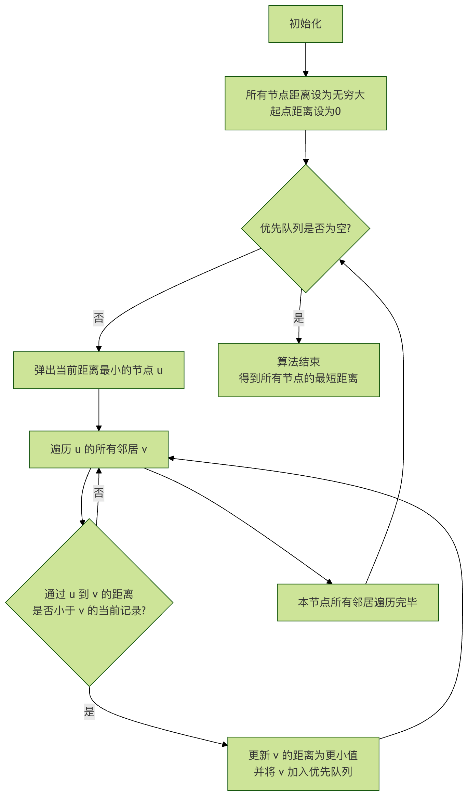
流程图说明：算法从初始化开始，不断从优先队列中取出当前离起点最近的未处理节点，用它来松弛（更新）其邻居节点的距离估计值，直到队列为空，此时所有最短路径均已确定。
下面我们使用 Python 来实现 Dijkstra 算法。我们将使用 heapq 这个优先队列（最小堆）模块来高效地获取当前距离最小的节点。
代码解析：
shortest_distances 字典用于记录从起点到每个节点的最终确认的最短距离，初始值为无穷大。priority_queue 是一个最小堆，总是让我们能快速取出"当前预估距离起点最近"的节点。heapq.heappop 取出堆顶节点（当前最近节点）。if current_distance > ... : continue 是一个关键优化，用于处理堆中可能存在的同一节点的多个旧版本（距离值）。distance = current_distance + weight，这就是"通过当前节点到达邻居的新距离"。shortest_distances 并将邻居及其新距离推入堆中，以便后续处理。运行上述代码，你会得到如下输出：
从节点 A 出发到各节点的最短距离： 到节点 A: 0 到节点 B: 3 # 路径: A -> C -> B 到节点 C: 2 # 路径: A -> C 到节点 D: 8 # 路径: A -> C -> B -> D 到节点 E: 10 # 路径: A -> C -> B -> D -> E
现在考虑另一个问题：你要为一个新建的居民区铺设光纤网络，需要连接所有房子，但为了节省成本，希望使用的光纤总长度最短。已知每两栋房子之间铺设光纤的成本（权重）。如何选择要铺设的线路？
这个问题要求我们找到一个连接所有节点的子图，并且这个子图是一棵树（无环），同时其所有边的权重之和最小。这棵树就叫做最小生成树（MST）。
Prim 算法 是寻找 MST 的一种贪心算法。它的过程很像"生长一棵树"：
Prim 算法的实现与 Dijkstra 非常相似，区别在于距离的定义。
在 Prim 算法中，我们维护的是每个节点到当前生成树的最小连接代价。
代码解析：
visited 集合记录已经属于 MST 的节点。edges 是一个最小堆，存储所有横跨 MST 内外的边（即一端在 visited 中，另一端不在）。(weight, from_node, to_node)。to_node 还未被访问，则它是一条有效的 MST 边。将其加入结果，并更新 visited 和 total_weight。to_node 的所有通向外部节点的边加入堆中，供下一轮选择。运行上述代码，你会看到 MST 的构建过程：
构建最小生成树的过程： 添加边: A - C, 权重: 2 添加边: C - B, 权重: 1 添加边: A - B, 权重: 4 # 注意：这条边连接B和A，但B已在树中，所以会被下一行的if语句跳过，不会添加。 添加边: B - D, 权重: 5 添加边: D - E, 权重: 2 最小生成树的总权重为: 10
（注：实际输出中，A - B这条边因为 to_node B 已在 visited 中，所以不会执行 print 语句。上面注释是为了说明。） 最终 MST 的边是 A-C, C-B, B-D, D-E，总权重为 2+1+5+2=10。
当你需要安排一系列任务，并且某些任务必须在另一些任务完成之后才能开始（例如，穿袜子必须在穿鞋之前），你会如何确定一个合理的执行顺序？这种任务间的依赖关系可以用有向无环图（DAG） 来表示，而找到一个可行的线性执行顺序的过程，就是拓扑排序。
Kahn 算法 是拓扑排序最直观的算法之一，基于入度（指向该节点的边数）。
代码逐行解析：
in_degree 字典记录每个节点的入度。遍历邻接表即可计算出每个节点被多少条边指向。queue，将所有"没有前置任务"（入度为0）的节点加入。topo_order，相当于完成该任务。运行上述代码，你会得到一种可行的学习顺序：
课程依赖图： 程序设计 -> ['数据结构', '算法'] 数据结构 -> ['算法', '数据库'] 算法 -> ['机器学习'] 数据库 -> ['系统设计'] 数学 -> ['机器学习'] 机器学习 -> [] 系统设计 -> [] 一种可行的课程学习顺序（拓扑排序）为： 程序设计 -> 数学 -> 数据结构 -> 算法 -> 数据库 -> 机器学习 -> 系统设计
注意：拓扑排序的结果可能不唯一。例如，数学和程序设计都是入度为 0 的起始节点，谁先谁后都可以。
为了帮助你更好地理解和选择这些算法，下表总结了它们的关键特点：
| 算法 | 主要用途 | 适用图类型 | 核心思想 | 时间复杂度（使用优先队列） | 典型应用场景 |
|---|---|---|---|---|---|
| Dijkstra | 单源最短路径 | 带非负权重的有向/无向图 | 贪心，每次扩展当前距离起点最近的节点 | O((V+E) log V) | 地图导航、网络路由 |
| Prim | 最小生成树（MST） | 带权重的连通无向图 | 贪心，每次将离当前生成树最近的节点并入 | O((V+E) log V) | 网络布线、电路板设计、聚类分析 |
| Kahn (拓扑排序) | 任务调度排序 | 有向无环图（DAG） | 基于入度，不断移除无前置依赖的节点 | O(V+E) | 课程安排、构建系统依赖、编译顺序 |
光看不够，动手实践才能融会贯通！请尝试完成以下练习：
下面的代码意图实现 Dijkstra 算法，但有几处 bug。请找出并修复它们。
Prim 算法是找 MST 的一种方法，另一种经典方法是 Kruskal 算法。其思想是：
你的任务：尝试使用"并查集（Disjoint Set Union, DSU）"数据结构来实现 Kruskal 算法，用于高效判断两个节点是否连通。
假设你有一个 friendships.json 文件，记录了社交网络中用户（ID表示）及其好友关系。每条关系有一个"亲密度"权重。
[
{"user_id": 1, "friend_id": 2, "closeness": 5},
{"user_id": 1, "friend_id": 3, "closeness": 2},
{"user_id": 2, "friend_id": 3, "closeness": 1},
{"user_id": 2, "friend_id": 4, "closeness": 6},
{"user_id": 3, "friend_id": 4, "closeness": 3},
{"user_id": 4, "friend_id": 5, "closeness": 4}
]
问题：如果"亲密度"权重可以看作距离（数值越小代表越亲密），请计算从用户 1 出发，到其他所有用户的"最亲密路径"（即权重和最小的路径）。你应该使用哪个算法？请编写代码解决。
排序算法（英语：Sorting algorithm）是一种能将一串资料依照特定排序方式排列的算法，排序后的资料即可放在有序数组。
排序 是指将一组数据（例如一个数组或列表）按照某种特定的顺序（升序或降序）重新排列的过程。
排序的依据通常是数据元素的某个关键码，比如数字的大小、字符串的字典序等。
排序是计算机科学中最基础、最核心的算法问题之一。无论是整理通讯录、分析考试成绩，还是数据库查询优化，排序算法都无处不在。
理解不同的排序算法，不仅能帮助我们解决实际问题，更是深入理解算法设计与分析思想的绝佳途径。
排序算法可以从多个维度进行分类，最常见的分类方式是基于其时间复杂度和空间复杂度。
| 分类维度 | 类别 | 说明 | 典型算法 |
|---|---|---|---|
| 时间复杂度 | O(n²) 级 | 简单直观，但效率较低，适合小规模数据。 | 冒泡排序、选择排序、插入排序 |
| O(n log n) 级 | 效率较高，是处理大规模数据的首选。 | 快速排序、归并排序、堆排序 | |
| 空间复杂度 | 原地排序 | 排序过程中只使用常数级别的额外空间。 | 冒泡、选择、插入、希尔、堆排序、快速排序 |
| 非原地排序 | 排序过程中需要借助与数据规模相当的额外空间。 | 归并排序、计数排序、桶排序、基数排序 | |
| 稳定性 | 稳定排序 | 相等元素的相对顺序在排序后保持不变。 | 冒泡、插入、归并、计数、桶、基数排序 |
| 不稳定排序 | 相等元素的相对顺序在排序后可能改变。 | 选择、希尔、堆、快速排序 |
关键概念解释：
下面的流程图展示了如何根据不同的需求场景，在几种经典算法中做出初步选择：
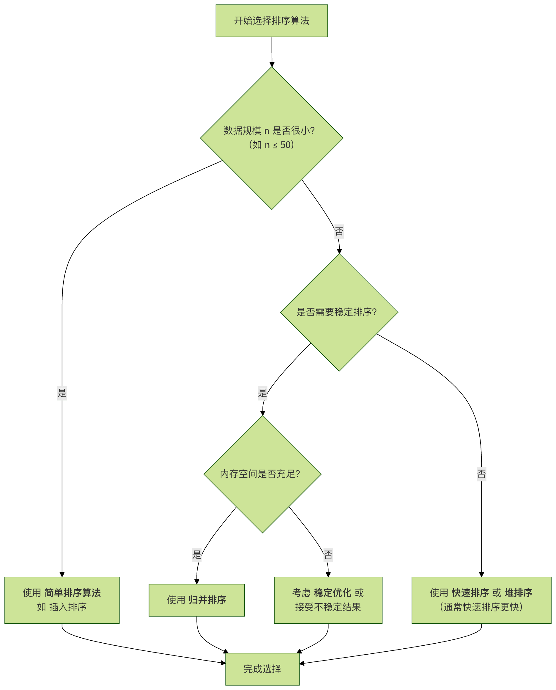
这类算法思想简单，是理解排序逻辑的起点。
核心思想：重复"遍历"待排序序列，一次比较两个相邻元素，如果它们的顺序错误就把它们交换过来。每一轮遍历都会将当前未排序部分的最大（或最小）元素冒泡到正确位置。
算法步骤：
代码实现：
输出：
原始数组: [64, 34, 25, 12, 22, 11, 90] 冒泡排序后: [11, 12, 22, 25, 34, 64, 90]
性能分析：
核心思想：在未排序序列中找到最小（或最大）元素，存放到排序序列的起始位置，然后再从剩余未排序元素中继续寻找最小（大）元素，放到已排序序列的末尾。以此类推，直到所有元素均排序完毕。
算法步骤：
arr[i...n-1]。从该区中选出关键字最小的记录 arr[min_index]。arr[min_index] 与无序区的第一个记录 arr[i] 交换。这样，arr[0...i] 就形成了有序区。代码实现：
输出：
原始数组: [64, 25, 12, 22, 11] 选择排序后: [11, 12, 22, 25, 64]
性能分析：
[5, 8, 5, 2, 9]，第一轮会将第一个 5 和 2 交换，破坏了两个 5 原有的顺序。核心思想：通过构建有序序列，对于未排序数据，在已排序序列中从后向前扫描，找到相应位置并插入。这就像我们整理扑克牌一样。
算法步骤：
代码实现：
输出：
原始数组: [12, 11, 13, 5, 6] 插入排序后: [5, 6, 11, 12, 13]
性能分析：
当数据量变大时，O(n²) 的算法会变得非常慢。下面这些更高效的算法是工程实践中的主力。
核心思想：分治法。选择一个基准元素，通过一趟排序将待排记录分隔成独立的两部分，其中一部分记录的关键字均比另一部分的关键字小，然后分别对这两部分记录继续进行排序，以达到整个序列有序。
算法步骤：
代码实现：
输出：
原始数组: [10, 80, 30, 90, 40, 50, 70] 快速排序后: [10, 30, 40, 50, 70, 80, 90]
性能分析：
核心思想：分治法的典型应用。将已有序的子序列合并，得到完全有序的序列。即先使每个子序列有序，再使子序列段间有序。
算法步骤：
mid = (low + high)/2。arr[low...mid] 和 arr[mid+1...high] 进行归并排序。递归的终止条件是子区间长度为1（认为一个元素自然有序）。代码实现：
输出：
原始数组: [38, 27, 43, 3, 9, 82, 10] 归并排序后: [3, 9, 10, 27, 38, 43, 82]
性能分析：
核心思想：利用堆这种数据结构所设计的一种排序算法。堆是一个近似完全二叉树的结构，并同时满足堆的性质：即父节点的值总是大于或等于（最大堆）或小于或等于（最小堆）任何子节点的值。
算法步骤：
n-1 个元素重新构造成一个最大堆，这样会得到次大值。将其与新末尾（n-1位置）交换。代码实现：
输出：
原始数组: [4, 10, 3, 5, 1] 堆排序后: [1, 3, 4, 5, 10]
性能分析：
为了更直观地比较上述算法的特性，我们将其汇总如下表：
| 算法 | 平均时间复杂度 | 最坏时间复杂度 | 空间复杂度 | 稳定性 | 主要特点 |
|---|---|---|---|---|---|
| 冒泡排序 | O(n²) | O(n²) | O(1) | 稳定 | 简单，效率低，适合教学。 |
| 选择排序 | O(n²) | O(n²) | O(1) | 不稳定 | 交换次数少，但比较次数固定多。 |
| 插入排序 | O(n²) | O(n²) | O(1) | 稳定 | 对小规模或基本有序数据高效。 |
| 快速排序 | O(n log n) | O(n²) | O(log n) | 不稳定 | 平均性能最好，是应用最广的排序算法。 |
| 归并排序 | O(n log n) | O(n log n) | O(n) | 稳定 | 性能稳定，但需要额外空间。常用于外部排序。 |
| 堆排序 | O(n log n) | O(n log n) | O(1) | 不稳定 | 原地排序且最坏情况也是 O(n log n)。 |
理论学习之后，动手实践是巩固知识的最佳方式。
给定以下场景，你会选择哪种排序算法？并简要说明理由。
参考答案思路：
下面的冒泡排序有一个小 bug 和一处可优化的地方，请找出并修复。
提示：
arr[j] > arr[j] 永远为假。尝试自己从头实现快速排序，并思考：
pivot 总是选择第一个元素，对已排序的数组排序会怎样？partition 函数，使其变为"三路快排"，能更高效地处理大量重复元素的数组？插入排序（Insertion Sort），一般也被称为直接插入排序，对于少量元素的排序，它是一个有效的算法。
插入排序是一种最简单的排序方法，它的基本思想是将一个记录插入到已经排好序的有序表中，从而一个新的、记录数增 1 的有序表。
在其实现过程使用双层循环，外层循环对除了第一个元素之外的所有元素，内层循环对当前元素前面有序表进行待插入位置查找，并进行移动。
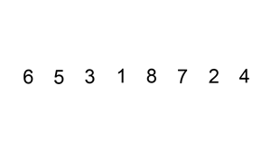
插入排序的核心思想是 "构建有序序列"。它将待排序的数组（或列表）在逻辑上分为两个部分：
算法会 反复地将未排序部分的第一个元素，插入到已排序部分的正确位置，直到未排序部分为空，整个数组就变得有序了。
插入排序的平均时间复杂度也是 O(n^2)，空间复杂度为常数阶 O(1)，具体时间复杂度和数组的有序性也是有关联的。
插入排序中，当待排序数组是有序时，是最优的情况，只需当前数跟前一个数比较一下就可以了，这时一共需要比较 N-1 次，时间复杂度为 O(N)。最坏的情况是待排序数组是逆序的，此时需要比较次数最多，最坏的情况是 O(n^2)。
假设前面 n-1(其中 n>=2)个数已经是排好顺序的，现将第 n 个数插到前面已经排好的序列中，然后找到合适自己的位置，使得插入第n个数的这个序列也是排好顺序的。
按照此法对所有元素进行插入，直到整个序列排为有序的过程，称为插入排序。
从小到大的插入排序整个过程如图示：
第一轮：从第二位置的 6 开始比较，比前面 7 小，交换位置。
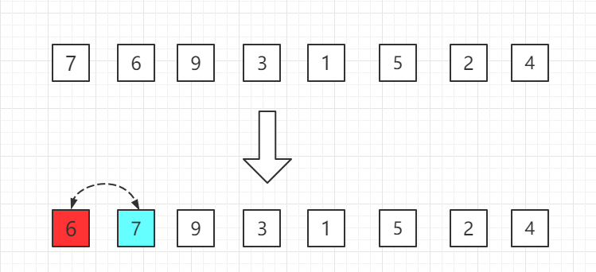
第二轮：第三位置的 9 比前一位置的 7 大，无需交换位置。
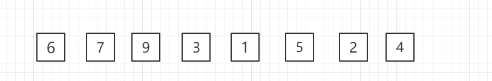
第三轮：第四位置的 3 比前一位置的 9 小交换位置，依次往前比较。
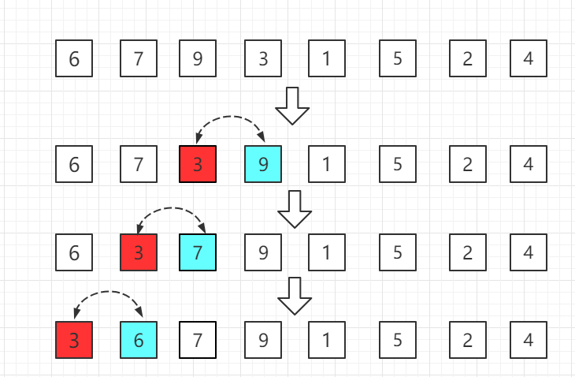
第四轮：第五位置的 1 比前一位置的 9 小，交换位置，再依次往前比较。
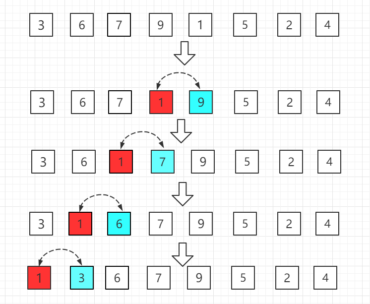
......
就这样依次比较到最后一个元素。
源码包下载：Download
部分代码：
理解了原理后，我们来看具体的代码实现。这里提供 Python 和 Java 两种常见语言的版本。
了解一个算法的性能和应用场景至关重要。插入排序的特性可以总结如下：
| 特性 | 说明 | 解释 |
|---|---|---|
| 时间复杂度 | 平均和最坏情况：$O(n^2)$ | 需要嵌套循环比较和移动元素。对于 n 个元素，最坏情况下（完全逆序）需要约 $\frac{n(n-1)}{2}$ 次比较和移动。 |
| 最好情况：$O(n)$ | 当输入数组已经基本有序时，内层循环很少执行或立即退出，仅需进行 n-1 次比较。 | |
| 空间复杂度 | $O(1)$ | 是 原地排序 算法，只需要常数级别的额外空间（如 current_value, j 等变量）。 |
| 稳定性 | 稳定 | 当两个元素相等时，排序后它们的相对顺序保持不变。因为算法只在遇到 大于 当前值时才移动元素。 |
| 适用场景 | 1. 小规模数据 2. 数据基本有序 3. 作为高级排序算法（如快速排序、归并排序）的子过程 |
在这些情况下，其简单的逻辑和低常数开销使其表现可能优于更复杂的 $O(n \log n)$ 算法。 |
在最坏情况（数组完全逆序）下：
总比较和移动次数为： $0 + 1 + 2 + ... + (n-1) = \frac{n(n-1)}{2}$
因此，时间复杂度为 $O(n^2)$。
希尔排序（Shell Sort）是插入排序的一种高效改进版本，由 Donald Shell 于 1959 年提出。
希尔排序的核心思想是通过将原始列表分割成多个子序列，先对每个子序列进行插入排序，然后逐步缩小子序列的间隔，最终对整个列表进行一次标准的插入排序。这种方法使得元素能够大跨度地移动，从而在早期阶段消除大量的逆序对，显著提升了排序效率。
想象一下整理一副乱序的扑克牌。插入排序就像一张一张地拿起牌，插入到手中已排序牌堆的正确位置。而希尔排序则像先每隔几张牌抽出来组成一个小牌堆并排序，然后缩小抽牌的间隔，重复这个过程。当间隔缩小到 1 时，就变成了标准的插入排序，但此时整个序列已经基本有序，最后的插入排序会非常快。
希尔排序的关键在于一个称为 增量序列 的概念。增量序列决定了每次划分子序列的间隔。算法会按照一个逐渐减小的增量序列，对列表进行多轮排序。
gap，将整个列表分成 gap 个子序列。每个子序列由所有间隔为 gap 的元素组成。希尔排序时间复杂度是 O(n^(1.3-2))，空间复杂度为常数阶 O(1)。希尔排序没有时间复杂度为 O(n(logn)) 的快速排序算法快 ，因此对中等大小规模表现良好，但对规模非常大的数据排序不是最优选择，总之比一般 O(n^2 ) 复杂度的算法快得多。
希尔排序目的为了加快速度改进了插入排序，交换不相邻的元素对数组的局部进行排序，并最终用插入排序将局部有序的数组排序。
在此我们选择增量 gap=length/2，缩小增量以 gap = gap/2 的方式，用序列 {n/2,(n/2)/2...1} 来表示。
如图示例：
（1）初始增量第一趟 gap = length/2 = 4
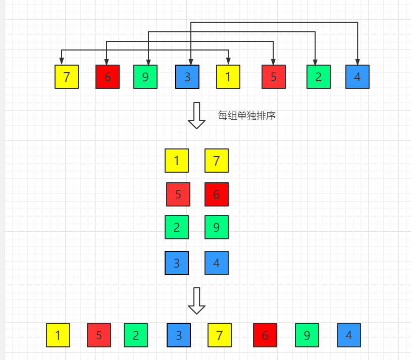
（2）第二趟，增量缩小为 2
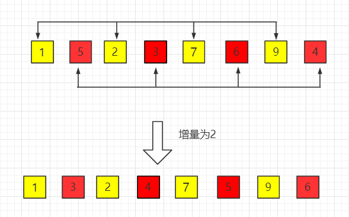
（3）第三趟，增量缩小为 1,得到最终排序结果
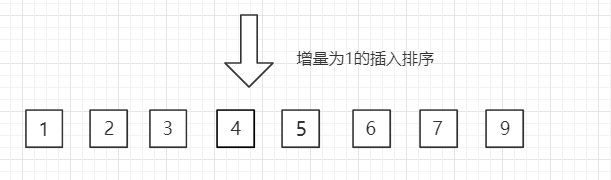
源码包下载：Download
最内层循环其实就是插入排序:
我们将使用 Python 来实现希尔排序，并采用最常见的增量设置（希尔原始序列）：gap = n // 2，并持续对 gap 进行整除 2 操作，直到 gap 为 1。
代码解析:
def shell_sort(arr): 定义希尔排序函数。n = len(arr) 获取数组长度。gap = n // 2 初始化增量。这是希尔排序最经典的增量序列起点。while gap > 0: 外层循环，控制增量逐渐减小直到为 0（实际为 1 后执行完，gap //= 2 变为 0 退出）。for i in range(gap, n): 内层循环。从索引 gap 开始遍历。i 指向的是当前待插入的元素。注意，这个循环巧妙地同时处理了所有以 gap 为间隔的子序列。temp = arr[i] 和 j = i：保存当前元素的值，并用 j 来记录它在当前子序列中应该插入的位置。while j >= gap and arr[j - gap] > temp: 这是插入排序的核心。在同一个子序列内（通过 j - gap 索引访问前一个元素），如果前一个元素比 temp 大，就将前一个元素向后移动 gap 个位置。arr[j] = temp：将保存的 temp 值插入到正确的位置。gap //= 2：一轮排序结束后，将增量减半，进行下一轮更精细的排序。return arr：返回排序后的数组。增量序列的选择直接影响希尔排序的性能。上面我们使用的是 Shell 原始序列（n/2, n/4, ..., 1），但并非最优。下面介绍几种常见的增量序列：
| 序列名称 | 生成公式 | 特点与复杂度 |
|---|---|---|
| Shell 原始序列 | $gap = \lfloor \frac{n}{2} \rfloor, gap = \lfloor \frac{gap}{2} \rfloor...$ | 实现简单，最坏时间复杂度为 $O(n^2)$。 |
| Hibbard 序列 | $1, 3, 7, 15, ..., 2^k - 1$ | 最坏时间复杂度可提升至 $O(n^{3/2})$。 |
| Knuth 序列 | $1, 4, 13, 40, ..., (3^k - 1) / 2$ （小于 n） | 平均时间复杂度约为 $O(n^{1.25})$，实践中常用。 |
| Sedgewick 序列 | $1, 5, 19, 41, 109, ...$ （混合了 $9 \times 4^k - 9 \times 2^k + 1$ 和 $4^k - 3 \times 2^k + 1$） | 是目前已知最好的序列之一，最坏复杂度可达 $O(n^{4/3})$。 |
希尔排序的时间复杂度分析非常复杂，因为它依赖于所选择的增量序列。
temp, gap, i, j 等变量），因此空间复杂度为 $O(1)$。| 特性 | 希尔排序 | 插入排序 | 归并排序 | 快速排序 |
|---|---|---|---|---|
| 平均时间复杂度 | $O(n^{1.25})$ ~ $O(n^{1.5})$ | $O(n^2)$ | $O(n \log n)$ | $O(n \log n)$ |
| 空间复杂度 | $O(1)$ | $O(1)$ | $O(n)$ | $O(\log n)$ |
| 稳定性 | 不稳定 | 稳定 | 稳定 | 不稳定 |
| 优点 | 中等数据量表现好，原地排序 | 简单，小数据或基本有序时高效 | 稳定，时间复杂度优 | 平均情况下最快 |
| 缺点 | 复杂度分析难，增量序列选择影响大 | 大数据量效率低 | 需要额外空间 | 最坏情况退化为 $O(n^2)$ |
归并排序（英语：Merge sort，或mergesort），是建立在归并操作上的一种有效的排序算法。
归并排序是采用分治法(Divide and Conquer）的一个非常典型的应用。将已有序的子序列合并，得到完全有序的序列；即先使每个子序列有序，再使子序列段间有序。若将两个有序表合并成一个有序表，称为二路归并。
想象一下，你要整理一副完全打乱的扑克牌。一个高效的方法是：先把这副牌分成两小堆，分别把每一小堆整理好，最后再把这两堆已经有序的牌合并成一整副有序的牌。归并排序 正是基于这种 分而治之 思想的经典排序算法。
它的核心操作可以概括为两个步骤：
归并排序适用于数据量大，并且对稳定性有要求的场景。
归并排序是一种 稳定 的排序算法（即相等元素的相对顺序在排序后保持不变），其时间复杂度在任何情况下都是 O(n log n)，这使其在处理大规模数据时非常高效，但它的空间复杂度为 O(n)，因为合并过程需要额外的数组来暂存数据。
下面的流程图清晰地展示了归并排序分与治的全过程：
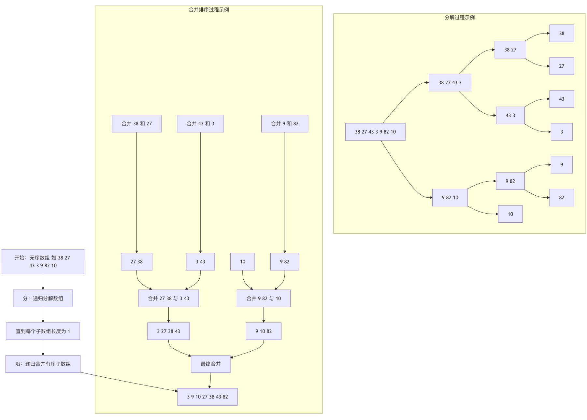
归并排序是递归算法的一个实例，这个算法中基本的操作是合并两个已排序的数组，取两个输入数组 A 和 B，一个输出数组 C，以及三个计数器 i、j、k，它们初始位置置于对应数组的开始端。
A[i] 和 B[j] 中较小者拷贝到 C 中的下一个位置，相关计数器向前推进一步。
当两个输入数组有一个用完时候，则将另外一个数组中剩余部分拷贝到 C 中。
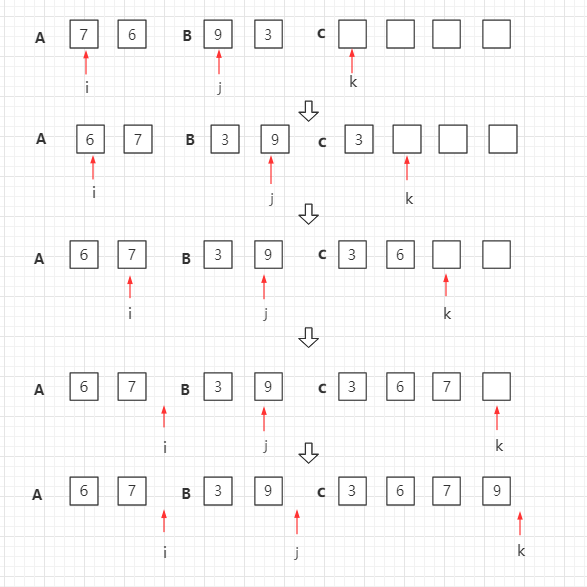
自顶向下的归并排序，递归分组图示：
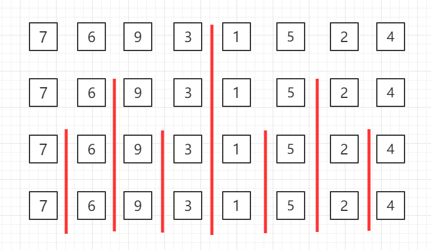
对第三行两个一组的数据进行归并排序
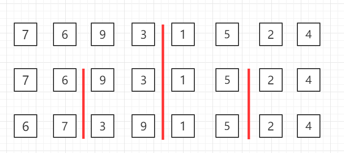
对第二行四个一组的数据进行归并排序
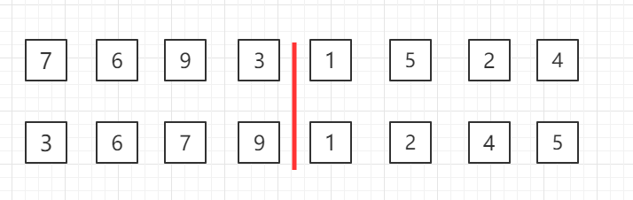
整体进行归并排序
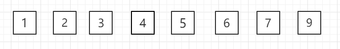
源码包下载：Download
归并排序的实现主要依赖于两个核心函数：merge_sort（负责"分"）和 merge（负责"治"）。
merge_sort这个函数采用递归的方式工作：
基准情况：如果当前数组的长度小于等于 1，那么它已经是有序的，直接返回。
递归情况：
mid。arr[:mid] 递归调用 merge_sort。arr[mid:] 递归调用 merge_sort。merge 函数将已经排好序的左右两部分合并起来。merge这是算法的精髓所在，负责将两个已经有序的小数组合并成一个大的有序数组。过程类似于我们同时翻阅两本已经按字母排序的通讯录，合并成一本。
temp，以及三个指针：i（指向左数组当前元素），j（指向右数组当前元素），k（指向临时数组的填充位置）。left[i] 和 right[j]，将较小的那个元素放入 temp[k]，然后相应指针和 k 向前移动一步。temp 中的有序序列复制回原数组的对应位置。让我们用 Python 来实现归并排序。我们将提供一个完整的、注释详尽的版本。
首先，我们准备一个无序的列表作为测试数据：
当你运行上面的代码时，你会看到如下输出：
原始数组: [38, 27, 43, 3, 9, 82, 10] 归并排序后: [3, 9, 10, 27, 38, 43, 82]
理解一个算法的效率至关重要。我们通过下表来总结归并排序的性能：
| 指标 | 复杂度 | 说明 |
|---|---|---|
| 时间复杂度 | O(n log n) | 这是归并排序最显著的优势。log n 来自于递归的层数（将数组对半分），n 来自于每一层合并操作需要遍历所有元素。无论数据初始状态如何（最好、最坏、平均情况），时间复杂度都是 O(n log n)。 |
| 空间复杂度 | O(n) | 合并过程需要与原始数组等大的额外空间来存储临时数组。这是归并排序的主要缺点。 |
| 稳定性 | 稳定 | 在 merge 函数中，当 left[i] == right[j] 时，我们优先取 left[i]（使用了 <= 比较），这保证了相等元素的原始相对顺序不变。 |
| 是否原地排序 | 否 | 需要额外的内存空间。 |
快速排序是计算机科学中最经典的排序算法之一，以其平均情况下 O(n log n) 的时间复杂度而闻名，然而，当输入数据已经有序或接近有序时，传统的快速排序会退化到 O(n²) 的时间复杂度，随机化快速排序通过引入随机性，巧妙地解决了这个问题。
在深入随机化快速排序之前，让我们先回顾一下传统快速排序的核心思想。
快速排序采用 分治策略，其基本步骤如下：
传统快速排序的性能高度依赖于基准值的选择。当每次选择的基准值都能将数组大致平分为两部分时，算法效率最高。但在以下情况下，性能会显著下降：
在这些最坏情况下，快速排序的时间复杂度会退化到 O(n²)，与冒泡排序等简单算法相当。
随机化快速排序通过引入随机性来避免最坏情况的发生，确保算法在各种输入下都能保持较好的平均性能。
随机化快速排序的核心改进非常简单：随机选择基准值，而不是固定选择第一个、最后一个或中间的元素。这种随机性使得算法在最坏情况下的概率极低，从而保证了期望时间复杂度为 O(n log n)。
随机化快速排序基本思想：通过一趟排序将要排序的数据分割成独立的两部分，其中一部分的所有数据都比另外一部分的所有数据都要小，然后再按此方法对这两部分数据分别进行快速排序，整个排序过程可以递归进行，以此达到整个数据变成有序序列。
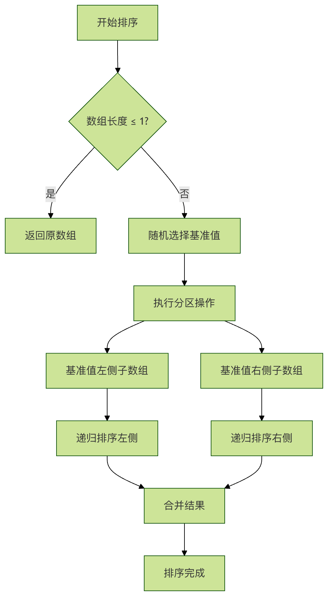
| 特性 | 传统快速排序 | 随机化快速排序 |
|---|---|---|
| 最坏情况时间复杂度 | O(n²) | O(n²)（但概率极低） |
| 平均情况时间复杂度 | O(n log n) | O(n log n) |
| 最坏情况发生条件 | 特定输入（如已排序数组） | 随机选择恰好总是选到最值 |
| 空间复杂度 | O(log n)（递归栈） | O(log n)（递归栈） |
| 稳定性 | 不稳定 | 不稳定 |
虽然理论上随机化快速排序的最坏情况时间复杂度仍然是 O(n²)，但在实际应用中，这种最坏情况发生的概率极低。对于包含 n 个元素的数组，随机选择基准值导致最坏情况的概率约为 1/n!，这在实践中几乎不可能发生。
在一个数组中选择一个基点，比如第一个位置的 4，然后把4挪到正确位置，使得之前的子数组中数据小于 4，之后的子数组中数据大于 4，然后逐渐递归下去完成整个排序。
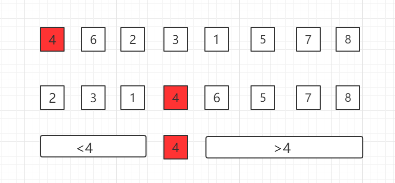
如何和把选定的基点数据挪到正确位置上，这是快速排序的核心，我们称为 Partition。
过程如下所示，其中 i 为当前遍历比较的元素位置：
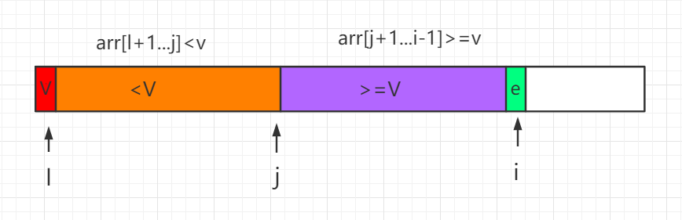
这个 partition 过程用代码表示为：
如果是对近乎有序的数组进行快速排序，每次 partition 分区后子数组大小极不平衡，容易退化成 O(n^2) 的时间复杂度算法。我们需要对上述代码进行优化，随机选择一个基点做为比较，称为随机化快速排序算法。只需要在上述代码前加上下面一行，随机选择数组中一数据和基点数据进行交换。
swap( arr, l , (int)(Math.random()*(r-l+1))+l );
源码包下载：Download
随机化快速排序的时间复杂度可以通过以下公式表示：
\[ T(n) = O(n) + T(k) + T(n - k - 1) \]
其中：
在随机化版本中，\(k\) 的期望值是 \(n/2\)，因此期望时间复杂度为：
\[ E[T(n)] = O(n \log n) \]
当数组中包含大量重复元素时，传统的两路快速排序效率不高。三路快速排序将数组分为三部分：小于基准值、等于基准值和大于基准值。
对于非常小的数组（通常小于 10-20 个元素），插入排序可能比快速排序更高效。我们可以结合两种算法的优点：
让我们通过实际测试来比较不同排序算法的性能：
双路快速排序算法是随机化快速排序的改进版本，partition 过程使用两个索引值（i、j）用来遍历数组，将 <v 的元素放在索引i所指向位置的左边，而将 >v 的元素放在索引j所指向位置的右边，v 代表标定值。
时间和空间复杂度同随机化快速排序。 对于有大量重复元素的数组，如果使用上一节随机化快速排序效率是非常低的，导致 partition 后大于基点或者小于基点数据的子数组长度会极度不平衡，甚至会退化成 O(n*2) 时间复杂度的算法，对这种情况可以使用双路快速排序算法。
使用两个索引值（i、j）用来遍历我们的序列，将 <=v 的元素放在索引 i 所指向位置的左边，而将 >=v 的元素放在索引 j 所指向位置的右边，平衡左右两边子数组。
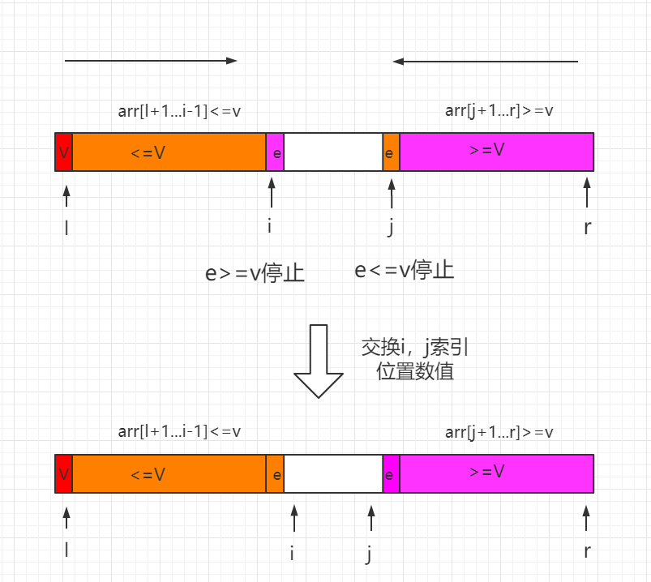
源码包下载：Download
双路快速排序的核心在于其 双指针分区方法。与单路快排（只从一端扫描）不同，它使用两个指针，分别从待排序子数组的头部和尾部向中间扫描，确保相等的元素不会被全部推向一侧。
假设我们要对数组 arr 中索引从 left 到 right 的部分进行排序。
选择基准值：从 arr[left...right] 中随机选择一个元素作为基准值 pivot。随机化是为了避免在有序数组上出现最坏情况。
初始化指针：
i = left + 1：从左向右扫描的指针，寻找第一个 大于等于 pivot 的元素。j = right：从右向左扫描的指针，寻找第一个 小于等于 pivot 的元素。扫描与交换循环：
while 循环，条件是 i <= j。while 循环：让 i 不断向右移动，直到 arr[i] >= pivot。while 循环：让 j 不断向左移动，直到 arr[j] <= pivot。arr[i] 是一个不该在左半部分的"大"元素，arr[j] 是一个不该在右半部分的"小"元素。i <= j，则交换 arr[i] 和 arr[j]，然后 i++, j--，继续外层循环。放置基准值与返回切分点：
i 和 j 已经交错（j < i）。此时 arr[left]（即基准值）需要被放到正确的位置。arr[left] 与 arr[j] 交换。因为 j 最终停留的位置，其指向的元素是 最后一个小于等于基准值 的元素。j 作为新的切分点。此时，arr[left...j-1] <= pivot，arr[j+1...right] >= pivot，且 arr[j] == pivot。得到分区点 p 后，对左子数组 arr[left...p-1] 和右子数组 arr[p+1...right] 递归地执行上述过程，直到子数组长度为 1。
让我们通过一个完整的 Java 实现来具体理解双路快速排序。
这是算法的核心，请结合上面的流程图和注释仔细理解。
让我们用一个包含重复元素的数组来测试我们的实现。
测试数据输出示例：
排序前: [4, 2, 2, 8, 3, 3, 1, 5, 3, 2] 排序后: [1, 2, 2, 2, 3, 3, 3, 4, 5, 8] 随机数组排序前: [17, 33, 12, 48, 8, 2, 41, ...] 随机数组排序后: [2, 8, 12, 17, 33, 33, 41, 48, ...] 排序结果验证通过！
快速排序（包括双路快排）不是稳定的排序算法。因为在分区过程中，非相邻元素的交换会打乱相等元素的原始相对顺序。
| 特性 | 单路快排 (Lomuto) | 双路快排 | 三路快排 |
|---|---|---|---|
| 分区方式 | 单指针从左向右扫描 | 双指针从两端向中间扫描 | 三指针，将数组分为 <pivot, =pivot, >pivot 三部分 |
| 处理重复元素 | 差，可能导致不平衡分区 | 好，能均衡分布重复元素 | 最优，能一次性处理好所有等于基准值的元素 |
| 代码复杂度 | 简单 | 中等 | 稍复杂 |
| 适用场景 | 教学、无/少重复元素 | 通用，尤其适合可能有重复元素的场景 | 存在大量重复元素的场景 |
三路排序算法（Three-Way Partitioning）是一种特殊的快速排序变体，专门为处理包含大量重复元素的数组而优化。它的核心思想是在一次分区过程中，将数组划分为三个部分，而不是传统的两个部分。
三路快速排序是双路快速排序的进一步改进版本，三路排序算法把排序的数据分为三部分，分别为小于 v，等于 v，大于 v，v 为标定值，这样三部分的数据中，等于 v 的数据在下次递归中不再需要排序，小于 v 和大于 v 的数据也不会出现某一个特别多的情况），通过此方式三路快速排序算法的性能更优。
想象一下，你有一大桶混合的彩色弹珠，里面有红色、白色和蓝色三种颜色。你的任务是把它们快速分开，让所有红色弹珠在左边，白色在中间，蓝色在右边，三路排序算法就是解决这类问题的分拣大师。
让我们用一个简单的表格来对比两者的区别：
| 特性 | 传统快速排序 | 三路快速排序 |
|---|---|---|
| 分区数量 | 2个（小于基准、大于基准） | 3个（小于基准、等于基准、大于基准） |
| 处理重复元素 | 效率较低，重复元素可能被多次比较和交换 | 效率极高，重复元素被集中处理 |
| 时间复杂度 | 平均 O(n log n)，最坏 O(n²) | 平均 O(n log n)，最坏 O(n²) |
| 空间复杂度 | O(log n)（递归栈） | O(log n)（递归栈） |
| 适用场景 | 通用排序，元素重复率低 | 元素重复率高，如颜色排序、成绩分段 |
时间和空间复杂度同随机化快速排序。
三路快速排序算法是使用三路划分策略对数组进行划分，对处理大量重复元素的数组非常有效提高快速排序的过程。它添加处理等于划分元素值的逻辑，将所有等于划分元素的值集中在一起。
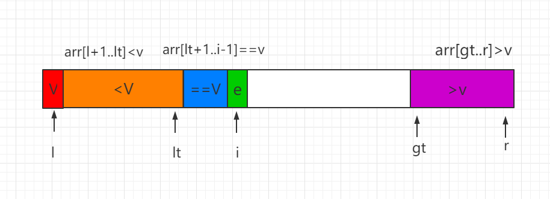
我们分三种情况进行讨论 partiton 过程，i 表示遍历的当前索引位置：
（1）当前处理的元素 e=V，元素 e 直接纳入蓝色区间，同时i向后移一位。
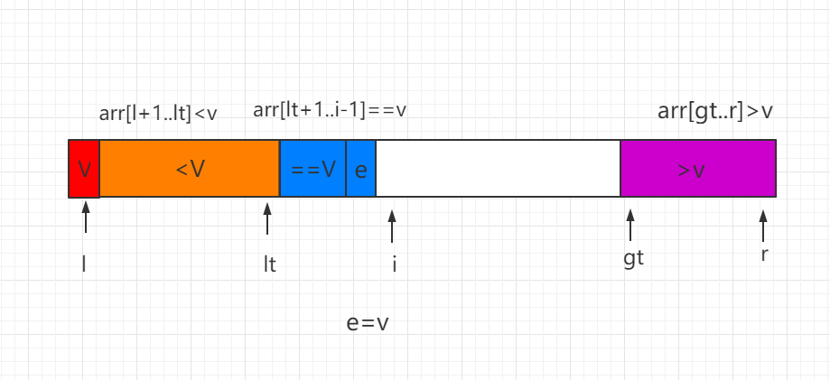
（2）当前处理元素 e<v，e 和等于 V 区间的第一个位置数值进行交换，同时索引 lt 和 i 都向后移动一位
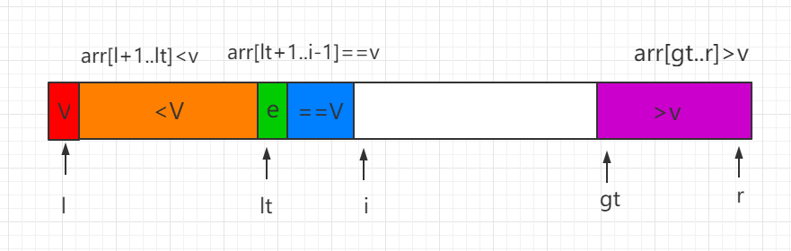
（3）当前处理元素 e>v，e 和 gt-1 索引位置的数值进行交换，同时 gt 索引向前移动一位。
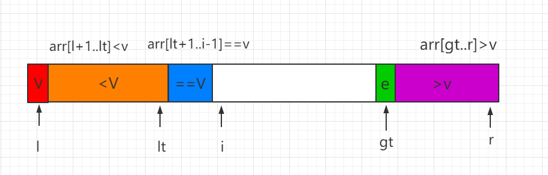
最后当 i=gt 时，结束遍历，同时需要把 v 和索引 lt 指向的数值进行交换，这样这个排序过程就完成了，然后对 <V 和 >V 的数组部分用同样的方法再进行递归排序。
源码包下载：Download
三路排序算法的精妙之处在于它使用三个指针来追踪数组的不同区域，在一次遍历中完成三项分类。
让我们通过一个状态图来理解算法的分区过程：
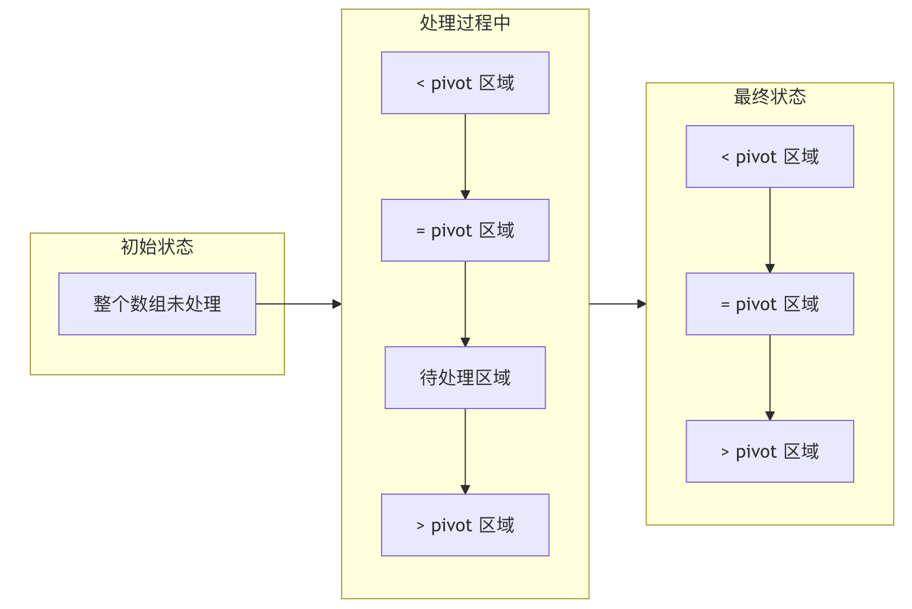
图说明：算法维护三个指针（lt, i, gt）将数组分为四个区域，随着处理进行，待处理区域逐渐缩小，最终形成三个明确的分区。
lt（less than）指针：指向小于基准值的区域的末尾i（current）指针：当前正在检查的元素位置gt（greater than）指针：指向大于基准值的区域的开头下面是一个标准的三路分区函数的实现，我们将逐行解析：
基于上面的分区函数，我们可以实现完整的三路快速排序：
这是三路排序算法的经典应用场景，也称为"荷兰国旗问题"。
测试数据说明：上面的数组表示颜色编号（0=红，1=白，2=蓝）。排序后应该是所有0在前，1在中间，2在后。
假设我们需要根据学生成绩进行分段：小于60为不及格，60-80为良好，大于80为优秀。
三路排序算法的时间复杂度分析可以用以下公式表示：
$$ T(n) = O(n) + T(k) + T(n - k - m) $$
其中：
最佳情况：每次分区都能将数组均匀分成三部分，时间复杂度为 $O(n \log_3 n)$，实际上仍然是 $O(n \log n)$。
最坏情况：每次分区都极不均匀，时间复杂度为 $O(n^2)$。
平均情况：对于随机数据，平均时间复杂度为 $O(n \log n)$。
算法使用递归实现，递归深度取决于分区情况：
可以通过尾递归优化或使用迭代方式减少空间使用。
当我们掌握了冒泡排序、快速排序等基础排序算法后，会发现排序不仅仅是把数据排好序这么简单。
在实际编程和面试中，许多问题都是排序算法的变体或衍生问题。
理解这些衍生问题，能帮助我们更深刻地掌握排序算法的本质，并提升解决复杂问题的能力。
本文将探讨几个经典的排序算法衍生问题，通过分析它们的核心思想、解决方案和实际应用，帮助你建立更系统的算法思维。
排序算法衍生问题指的是那些不直接要求排序，但解决问题的核心思想、算法流程或数据结构与经典排序算法高度相关的问题。
这类问题通常有以下几个特点：
下面我们通过几个具体问题来深入理解。
从 n 个元素中找出最大（或最小）的 K 个元素。
实际应用场景：
| 方法 | 时间复杂度 | 空间复杂度 | 适用场景 |
|---|---|---|---|
| 直接排序后取前K个 | O(n log n) | O(1) 或 O(n) | K 接近 n 时 |
| 冒泡排序 K 次 | O(n × K) | O(1) | K 非常小 (K < 10) |
| 最小堆/最大堆 | O(n log K) | O(K) | 最常用，K 远小于 n |
| 快速选择算法 | O(n) 平均，O(n²) 最坏 | O(1) | 不需要完全有序，只需Top K |
快速选择算法是快速排序的变体，它不需要完全排序整个数组，只需要找到第K大的元素所在的位置。
堆是解决Top K问题的经典数据结构，特别适合处理数据流场景。
在一个数组中，如果前面的元素大于后面的元素，则这两个元素构成一个逆序对。计算数组中逆序对的总数。
实际应用场景：
归并排序的过程中天然地可以统计逆序对数量，这是分治思想的典型应用。
下图展示了归并排序过程中如何统计逆序对。关键点在于：当右半部分的元素小于左半部分的某个元素时，左半部分剩余的所有元素都与该右半部分元素构成逆序对。
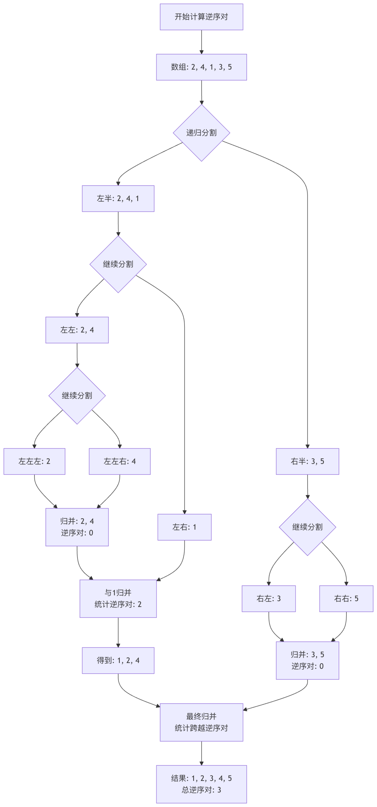
这个问题是Top K问题的特例，但解法更加多样。
| 方法 | 时间复杂度 | 空间复杂度 | 特点 |
|---|---|---|---|
| 排序后直接取 | O(n log n) | O(1) 或 O(n) | 最简单直观 |
| 快速选择 | O(n) 平均 | O(1) | 最优平均复杂度 |
| 堆方法 | O(n log k) | O(k) | 适合数据流 |
| 计数排序 | O(n + m) | O(m) | 适合数据范围小的情况 |
给定一组区间，合并所有重叠的区间。
实际应用场景：
现在，让我们通过几个练习来巩固所学知识：
给定一个包含红色、白色和蓝色，一共 n 个元素的数组，原地对它们进行排序，使得相同颜色的元素相邻，并按照红色、白色、蓝色的顺序排列。
在未排序的数组中找到第 k 个最大的元素。
堆(Heap)是计算机科学中一类特殊的数据结构的统称。
堆通常是一个可以被看做一棵完全二叉树的数组对象。
堆满足下列性质：
堆是利用完全二叉树的结构来维护一组数据，然后进行相关操作，一般的操作进行一次的时间复杂度在 O(1)~O(logn) 之间，堆通常用于动态分配和释放程序所使用的对象。
若为优先队列的使用场景，普通数组或者顺序数组，最差情况为 O(n^2)，堆这种数据结构也可以提高入队和出队的效率。
| 入队 | 出队 | |
|---|---|---|
| 普通数组 | O(1) | O(n) |
| 顺序数组 | O(n) | O(1) |
| 堆 | O(logn) | O(log) |
二叉堆是一颗完全二叉树，且堆中某个节点的值总是不大于其父节点的值，该完全二叉树的深度为 k，除第 k 层外，其它各层 (1～k-1) 的结点数都达到最大个数，第k 层所有的结点都连续集中在最左边。
其中堆的根节点最大称为最大堆，如下图所示：
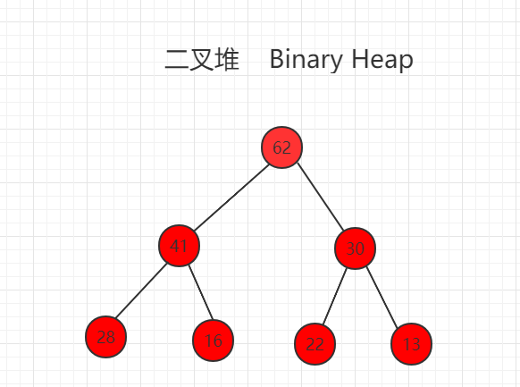
我们可以使用数组存储二叉堆，右边的标号是数组的索引。
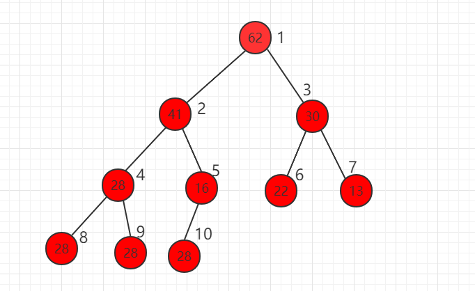
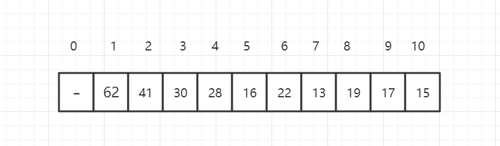
假设当前元素的索引位置为 i，可以得到规律：
parent(i) = i/2（取整） left child(i) = 2*i right child(i) = 2*i +1
源码包下载：Download
本小节介绍如何向一个最大堆中添加元素，称为 shift up。
假设我们对下面的最大堆新加入一个元素52，放在数组的最后一位，52大于父节点16，此时不满足堆的定义，需要进行调整。
首先交换索引为 5 和 11 数组中数值的位置，也就是 52 和 16 交换位置。
此时 52 依然比父节点索引为 2 的数值 41 大，我们还需要进一步挪位置。
这时比较 52 和 62 的大小，52 已经比父节点小了，不需要再上升了，满足最大堆的定义。我们称这个过程为最大堆的 shift up。
源码包下载：Download
本小节将介绍如何从一个最大堆中取出一个元素，称为 shift down，只能取出最大优先级的元素，也就是根节点，把原来的 62 取出后，下面介绍如何填补这个最大堆。
第一步，我们将数组最后一位数组放到根节点，此时不满足最大堆的定义。
调整的过程是将这个根节点 16 一步一步向下挪，16 比子节点都小，先比较子节点 52 和 30 哪个大，和大的交换位置。
继续比较 16 的子节点 28 和 41，41 大，所以 16 和 41 交换位置。
继续 16 和孩子节点 15 进行比较，16 大，所以现在不需要进行交换，最后我们的 shift down 操作完成，维持了一个最大堆的性质。
源码包下载：Download
堆排序（Heapsort）是指利用堆这种数据结构所设计的一种排序算法。
堆是一个近似 完全二叉树的结构，并同时满足堆积的性质：即子结点的键值或索引总是小于（或者大于）它的父节点。
我们之前构造堆的过程是一个个数据调用 insert 方法使用 shift up 逐个插入到堆中，这个算法的时候时间复杂度是 O(nlogn)，本小节介绍的一种构造堆排序的过程，称为 Heapify，算法时间复杂度为 O(n)。
完全二叉树有个重要性质，对于第一个非叶子节点的索引是 n/2 取整数得到的索引值，其中 n 是元素个数(前提是数组索引从 1 开始计算)。
索引 5 位置是第一个非叶子节点，我们从它开始逐一向前分别把每个元素作为根节点进行 shift down 操作满足最大堆的性质。
索引 5 位置进行 shift down 操作后，22 和 62 交换位置。
对索引 4 元素进行 shift down 操作
对索引 3 元素进行 shift down 操作
对索引 2 元素进行 shift down 操作
最后对根节点进行 shift down 操作，整个堆排序过程就完成了。
源码包下载：Download
上一节的堆排序，我们开辟了额外的空间进行构造堆和对堆进行排序。这一小节，我们进行优化，使用原地堆排序。
对于一个最大堆，首先将开始位置数据和数组末尾数值进行交换，那么数组末尾就是最大元素，然后再对W元素进行 shift down 操作，重新生成最大堆，然后将新生成的最大数和整个数组倒数第二位置进行交换，此时倒数第二位置就是倒数第二大数据，这个过程以此类推。
整个过程可以用如下图表示：
源码包下载：Download
索引堆是对堆这个数据结构的优化。
索引堆使用了一个新的 int 类型的数组，用于存放索引信息。
相较于堆，优点如下：
如果堆中存储的元素较大，那么进行交换就要消耗大量的时间，这个时候可以用索引堆的数据结构进行替代，堆中存储的是数组的索引，我们相应操作的是索引。
我们需要对之前堆的代码实现进行改造，换成直接操作索引的思维。首先构造函数添加索引数组属性 indexes。
protected T[] data; // 最大索引堆中的数据相应构造函数调整为，添加初始化索引数组。
...调整插入操作，indexes 数组中添加的元素是真实 data 数组的索引 indexes[count+1] = i。
...调整 shift up 操作：比较的是 data 数组中父节点数据的大小，所以需要表示为 data[index[k/2]] < data[indexs[k]]，交换 index 数组的索引，对 data 数组不产生任何变动，shift down 同理。
...从索引堆中取出元素，对大元素为根元素 data[index[1]] 中的数据，然后再交换索引位置进行 shift down 操作。
...也可以直接取出最大值的 data 数组索引值
...修改索引位置数据
...源码包下载：Download
上述修改索引位置在查找索引位置我们使用了遍历，效率不高。我们还可以再优化一遍，维护一组 reverse[i] 数组，表示索引 i 在 indexes(堆) 中的位置，把查找的时间复杂度降为 O(1)。
有如下性质：
indexes[i] = j reverse[j] = i indexes[reverse[i]] = i reverse[indexes[i]] = i
二分搜索树（英语：Binary Search Tree），也称为 二叉查找树 、二叉搜索树 、有序二叉树或排序二叉树。满足以下几个条件：
它的左、右子树也都是二分搜索树。
如下图所示：
二分搜索树有着高效的插入、删除、查询操作。
平均时间的时间复杂度为 O(log n)，最差情况为 O(n)。二分搜索树与堆不同，不一定是完全二叉树，底层不容易直接用数组表示故采用链表来实现二分搜索树。
| 查找元素 | 插入元素 | 删除元素 | |
|---|---|---|---|
| 普通数组 | O(n) | O(n) | O(n) |
| 顺序数组 | O(logn) | O(n) | O(n) |
| 二分搜索树 | O(logn) | O(logn) | O(logn) |
下面先介绍数组形式的二分查找法作为思想的借鉴，后面继续介绍二分搜索树的查找方式。
二分查找法的思想在 1946 年提出，查找问题是计算机中非常重要的基础问题，对于有序数列，才能使用二分查找法。如果我们要查找一元素，先看数组中间的值V和所需查找数据的大小关系，分三种情况：
源码包下载：Download
首先定义一个二分搜索树，Java 代码表示如下:
public class BST<Key extends Comparable<Key>, Value> {Node 表示节点，count 代表节点的数量。
以下实例向如下二分搜索树中插入元素 61 的步骤：
（1）需要插入的元素 61 比 42 大，比较 42 的右子树根节点。
（2）61 比 59 大，所以需要把 61 移动到 59 右子树相应位置，而此时为空，直接插入作为 59 的右子节点。
插入操作也是一个递归过程，分三种情况，等于、大于、小于。
源码包下载：Download
二分搜索树没有下标, 所以针对二分搜索树的查找操作, 这里定义一个 contain 方法, 判断二分搜索树是否包含某个元素, 返回一个布尔型变量, 这个查找的操作一样是一个递归的过程, 具体代码实现如下:
...以下实例在二分搜索树中寻找 43 元素
(1) 元素 43 比根节点 42 大，需要在右子节点继续比较。
(2) 元素 43 比 59 小，需要在左子节点继续比较。
(3) 元素 43 比 51 小，需要在左子节点继续比较。(4) 查找 51 的左子节点 43，正好和相等，结束。
如果需要查找 key 对应的 value，代码如下所示:
...源码包下载：Download
二分搜索树遍历分为两大类，深度优先遍历和层序遍历。
深度优先遍历分为三种：先序遍历（preorder tree walk）、中序遍历（inorder tree walk）、后序遍历（postorder tree walk），分别为：
前序遍历结果图示：
对应代码示例：
...中序遍历结果图示：
对应代码示例：
...后序遍历结果图示：
对应代码示例：
...源码包下载：Download
二分搜索树的层序遍历，即逐层进行遍历，即将每层的节点存在队列当中，然后进行出队（取出节点）和入队（存入下一层的节点）的操作，以此达到遍历的目的。
通过引入一个队列来支撑层序遍历：
如果根节点为空，无可遍历；
如果根节点不为空：
先将根节点入队；
只要队列不为空：
下面依次演示如下步骤：
（1）先取出根节点放入队列
（2）取出 29，左右孩子节点入队
（3）队首 17 出队，孩子节点 14、23 入队。
（4）31 出队，孩子节点 30 和 43 入队
（5）最后全部出队
核心代码示例： ...源码包下载：Download
本小节介绍二分搜索树节点的删除之前，先介绍如何查找最小值和最大值，以及删除最小值和最大值。
以最小值为例（最大值同理）：
查找最小 key 值代码逻辑，往左子节点递归查找下去：
...删除二分搜索树的最小 key 值，如果该节点没有右子树，那么直接删除，如果存在右子树，如图所示：
删除节点 22，存在右孩子，只需要将右子树 33 节点代替节点 22。
这个删除最小值用代码表示:
...现在讨论二分搜索树节点删除分以下三种情况：
1、删除只有左孩子的节点，如下图节点 58。
删除掉元素 58，让左子树直接代替 58 的位置，整个二分搜索树的性质不变。
2、删除只有右孩子的节点，如下图节点 58。
删除掉元素 58，让右子树直接代替 58 的位置，整个二分搜索树的性质不变。
3、删除左右都有孩子的节点，如下图节点 58。
（1）找到右子树中的最小值，为节点 59
（2）节点 59 代替待删除节点 58
综合以上规律，删除以 node 为根的二分搜索树中键值为 key 的节点，核心代码示例：
源码包下载：Download
二分搜索树可以当做查找表的一种实现。
我们使用二分搜索树的目的是通过查找 key 马上得到 value。minimum、maximum、successor（后继）、predecessor（前驱）、floor（地板）、ceil（天花板、rank（排名第几的元素）、select（排名第n的元素是谁）这些都是二分搜索树顺序性的表现。
二分搜索树在时间性能上是具有局限性的。
如下图所示，元素节点一样，组成两种不同的二分搜索树，都是满足定义的：
二叉搜索树可能退化成链表，相应的，二叉搜索树的查找操作是和这棵树的高度相关的，而此时这颗树的高度就是这颗树的节点数 n，同时二叉搜索树相应的算法全部退化成 O(n) 级别。
并查集是一种树型的数据结构，用于处理一些不相交集合的合并及查询问题。
并查集的思想是用一个数组表示了整片森林（parent），树的根节点唯一标识了一个集合，我们只要找到了某个元素的的树根，就能确定它在哪个集合里。
并查集用在一些有 N 个元素的集合应用问题中，我们通常是在开始时让每个元素构成一个单元素的集合，然后按一定顺序将属于同一组的元素所在的集合合并，其间要反复查找一个元素在哪个集合中。这个过程看似并不复杂，但数据量极大，若用其他的数据结构来描述的话，往往在空间上过大，计算机无法承受，也无法在短时间内计算出结果，所以只能用并查集来处理。
再如上图 0、2、4、6、8 下面都是 0 这个集合，表示 0、2、4、6、8 这五个元素是相连接的，1、3、5、7、9 下面都是 1 这个集合，表示 0，1、3、5、7、9 这五个元素是相连的。
构造一个类 UnionFind，初始化, 每一个id[i]指向自己, 没有合并的元素：
...源码包下载：Download
本小节基于上一小节并查集的结构介绍基础操作，查询和合并和判断是否连接。
查询元素所在的集合编号，直接返回 id 数组值，O(1) 的时间复杂度。
...合并元素 p 和元素 q 所属的集合， 合并过程需要遍历一遍所有元素, 再将两个元素的所属集合编号合并，这个过程是 O(n) 复杂度。
...源码包下载：Download
对于一组数据，并查集主要支持两个动作：
union(p,q) - 将 p 和 q 两个元素连接起来。
find(p) - 查询 p 元素在哪个集合中。
isConnected(p,q) - 查看 p 和 q 两个元素是否相连接在一起。
在上一小节中，我们用 id 数组的形式表示并查集，实际操作过程中查找的时间复杂度为 O(1)，但连接效率并不高。
本小节，我们将用另外一种方式实现并查集。把每一个元素，看做是一个节点并且指向自己的父节点，根节点指向自己。如下图所示，节点 3 指向节点 2，代表 3 和 2 是连接在一起的，节点2本身是根节点，所以指向自己。
同样用数组表示并查集，但是下面一组元素用 parent 表示当前元素指向的父节点，每个元素指向自己，都是独立的。
如果此时操作 union(4,3)，将元素 4 指向元素 3：
数组也进行相应改变：
判断两个元素是否连接，只需要判断根节点是否相同即可。
如下图，节点 4 和节点 9 的根节点都是 8，所以它们是相连的。
连接两个元素，只需要找到它们对应的根节点，使根节点相连，那它们就是相连的节点。
假设要使上图中的 6 和 4 相连，只需要把 6 的根节点 5 指向 4 的根节点 8 即可。
构建这种指向父节点的树形结构， 使用一个数组构建一棵指向父节点的树，parent[i] 表示 i 元素所指向的父节点。
...查找过程, 查找元素 p 所对应的集合编号，不断去查询自己的父亲节点, 直到到达根节点，根节点的特点 parent[p] == p，O(h) 复杂度, h 为树的高度。
...合并元素 p 和元素 q 所属的集合，分别查询两个元素的根节点，使其中一个根节点指向另外一个根节点，两个集合就合并了。这个操作是 O(h) 的时间复杂度，h 为树的高度。
public void unionElements(int p, int q){源码包下载：Download
按照上一小节的思路，我们把如下图所示的并查集，进行 union(4,9) 操作。
合并操作后的结构为：
可以发现，这个结构的树的层相对较高，若此时元素数量增多，这样产生的消耗就会相对较大。解决这个问题其实很简单，在进行具体指向操作的时候先进行判断，把元素少的集合根节点指向元素多的根节点，能更高概率的生成一个层数比较低的树。
构造并查集的时候需要多一个参数，sz 数组，sz[i] 表示以 i 为根的集合中元素个数。
// 构造函数在进行合并操作时候，根据两个元素所在树的元素个数不同判断合并方向。
public void unionElements(int p, int q){优化后，合并结果如下，9 指向父节点 8。
源码包下载：Download
上一小节介绍了并查集基于 size 的优化，但是某些场景下，也会存在某些问题，如下图所示，操作 union(4,2)。
根据上一小节，size 的优化，元素少的集合根节点指向元素多的根节点。操作完后，层数变为4，比之前增多了一层，如下图所示：
由此可知，依靠集合的 size 判断指向并不是完全正确的，更准确的是，根据两个集合层数，具体判断根节点的指向，层数少的集合根节点指向层数多的集合根节点，如下图所示，这就是基于 rank 的优化。
我们在并查集的属性中，添加 rank 数组，rank[i] 表示以 i 为根的集合所表示的树的层数。
...构造函数相应作出修改：
...合并两元素的时候，需要比较根节点集合的层数，整个过程是 O(h)复杂度，h为树的高度。
...源码包下载：Download
并查集里的 find 函数里可以进行路径压缩，是为了更快速的查找一个点的根节点。对于一个集合树来说，它的根节点下面可以依附着许多的节点，因此，我们可以尝试在 find 的过程中，从底向上，如果此时访问的节点不是根节点的话，那么我们可以把这个节点尽量的往上挪一挪，减少数的层数，这个过程就叫做路径压缩。
如下图中，find(4) 的过程就可以路径压缩，让数的层数更少。
节点 4 往上寻找根节点时，压缩第一步，树的层数就减少了一层：
节点 2 向上寻找，也不是根节点，那么把元素 2 指向原来父节点的父节点，操后后树的层数相应减少了一层，同时返回根节点 0。
find 过程代码修改为 ：
// 查找过程, 查找元素p所对应的集合编号上述路径压缩并不是最优的方式，我们可以把最初的树压缩成下图所示，层数是最少的。
这个 find 过程代表表示为:
...源码包下载：Download
图论(Graph Theory)是离散数学的一个分支，是一门研究图(Graph)的学问。
图是用来对对象之间的成对关系建模的数学结构，由"节点"或"顶点"(Vertex）以及连接这些顶点的"边"（Edge）组成。
值得注意的是，图的顶点集合不能为空，但边的集合可以为空。图可能是无向的，这意味着图中的边在连接顶点时无需区分方向。否则，称图是有向的。下面左图是一个典型的无向图结构，右图则属于有向图。本章节介绍的图都是无向图。
图的分类：无权图和有权图，连接节点与节点的边是否有数值与之对应，有的话就是有权图，否则就是无权图。
图的连通性：在图论中，连通图基于连通的概念。在一个无向图 G 中，若从顶点 i 到顶点 j 有路径相连（当然从j到i也一定有路径），则称 i 和 j 是连通的。如果 G 是有向图，那么连接i和j的路径中所有的边都必须同向。如果图中任意两点都是连通的，那么图被称作连通图。如果此图是有向图，则称为强连通图（注意：需要双向都有路径）。图的连通性是图的基本性质。
完全图：完全是一个简单的无向图，其中每对不同的顶点之间都恰连有一条边相连。
自环边：一条边的起点终点是一个点。
平行边：两个顶点之间存在多条边相连接。
图可用于在物理、生物、社会和信息系统中建模许多类型的关系和过程，许多实际问题可以用图来表示。因此，图论成为运筹学、控制论、信息论、网络理论、博弈论、物理学、化学、生物学、社会科学、语言学、计算机科学等众多学科强有力的数学工具。在强调其应用于现实世界的系统时，网络有时被定义为一个图，其中属性(例如名称)之间的关系以节点和或边的形式关联起来。
邻接矩阵：1 表示相连接，0 表示不相连。
邻接表：只表达和顶点相连接的顶点信息
邻接表适合表示稀疏图 (Sparse Graph)
邻接矩阵适合表示稠密图 (Dense Graph)
源码包下载：Download
(1) 邻接矩阵
（2）邻接表
图论中最常见的操作就是遍历邻边，通过一个顶点遍历相关的邻边。邻接矩阵的遍历邻边的时间复杂度为 O(V)，邻接表可以直接找到，效率更高。
邻接矩阵迭代:
...邻接表迭代：
...对于这两种图的表达方式我们可以抽象出一个接口，生成这一套算法的框架，而不用去考虑底层是邻接表还是邻接矩阵。
本小节写了一个测试用例 GraphReadTest，通过调用抽象接口实现图的展示，可以在 read 包查看。
/**源码包下载：Download
（1）邻接矩阵迭代
（2）邻接表迭代
深度优先遍历(Depth First Search)的主要思想是首先以一个未被访问过的顶点作为起始顶点，沿当前顶点的边走到未访问过的顶点。当没有未访问过的顶点时，则回到上一个顶点，继续试探别的顶点，直至所有的顶点都被访问过。
下图示例的图从 0 开始遍历顺序如右图所示：
无向图 G 的一个极大连通子图称为 G 的一个连通分量（或连通分支）。连通图只有一个连通分量，即其自身；非连通的无向图有多个连通分量。连通分量与连通分量之间没有任何边相连。深度优先遍历可以用来求连通分量。
下面以求连通分量为例，来实现图的深度优先遍历，称为 dfs。下面代码片段中，visited 数组记录 dfs 的过程中节点是否被访问，ccount 记录联通分量个数，id 数组代表每个节点所对应的联通分量标记，两个节点拥有相同的 id 值代表属于同一联通分量。
...图的深度优先遍历是个递归过程，实现代码：
...源码包下载：Download
图的寻路算法也可以通过深度优先遍历 dfs 实现，寻找图 graph 从起始 s 点到其他点的路径，在上一小节的实现类中添加全局变量 from数组记录路径，from[i] 表示查找的路径上i的上一个节点。
首先构造函数初始化寻路算法的初始条件，from = new int[G.V()] 和 from = new int[G.V()]，并在循环中设置默认值，visited 数组全部为false，from 数组全部为 -1 值，后面对起始节点进行 dfs 的递归处理。
...那么判断 s 点到 w 点是否有路径，只要查询 visited 对应数组值即可。
...获取 s 点到 w 点的具体路径，我们用 path 方法来实现，先判断是否连通，可调用 hasPath 方法，由构造函数可知只需通过 from 数组往上追溯就能找到所有的路径。
...源码包下载：Download
广度优先遍历从某个顶点 v 出发，首先访问这个结点，并将其标记为已访问过，然后顺序访问结点v的所有未被访问的邻接点 {vi,..,vj} ，并将其标记为已访问过，然后将 {vi,...,vj} 中的每一个节点重复节点v的访问方法，直到所有结点都被访问完为止。
我们可以分为三个步骤：
下图所示，右边蓝色表示从 0 开始遍历节点的顺序，下面是记录距离 0 的距离，可知广度优先遍历能求出无权图的最短路径。
下面用代码展示如何用广度优先遍历方式完成遍历，并且查询到最短路径。我们在上一小节代码的基础上增加一全局变量 ord 数组，记录路径中节点的次序。ord[i] 表示 i 节点在路径中的次序。同时构造函数做出相应调整，在遍历相邻节点时 每访问一个未被访问的节点进行 ord[i] = ord[v] + 1记录距离。邻接表的广度优先遍历时间复杂度为 O(V+E)，邻接矩阵的时间复杂度为O(V^2)。
...查看从 s 点到 w 点的最短路径长度，若从 s 到 w 不可达，返回-1。
...源码包下载：Download